Hearing and Balance
Chapter 7 of 19Introduction
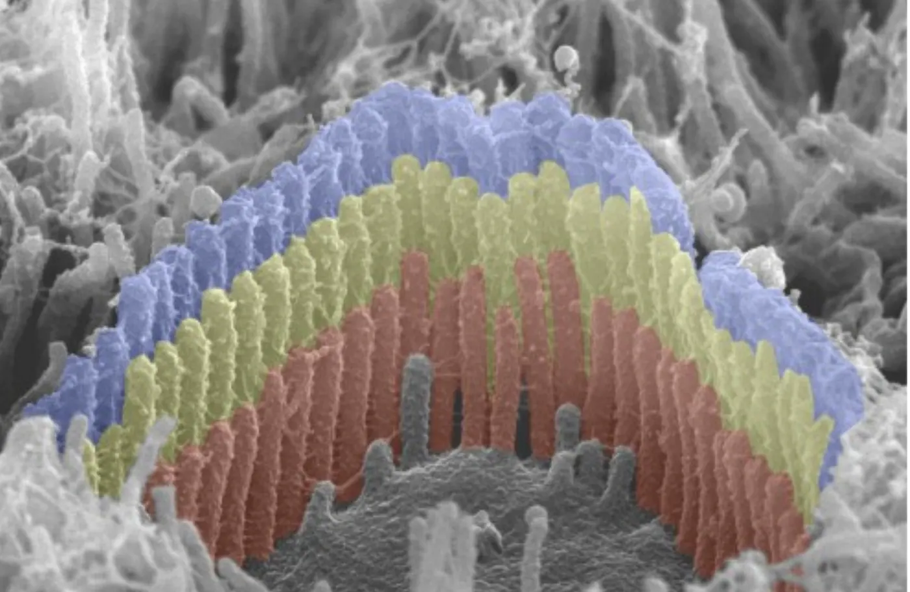
Imagine yourself lying in a field on a warm summer day. With your eyes closed, you can hear the wind moving through the grass, and off to your left, through the branches of an oak tree. In the tree, a Scrub Jay is giving a loud, screeching call, while a Western Meadowlark is singing its long, warbled improvisations. Over to your right, a stream is lazily flowing through the meadow except where it spills around some rocks. At intervals, you hear splashes from the water. Your friend is throwing in rocks. Just as you are starting to doze off, she calls your name, waking you up. You can sense a note of impatience in her voice. Later, in a crowded room, you are straining to listen to an acquaintance tell a rather boring story over the sounds of a dozen other conversations when you hear your friend say your name again, and you turn your head to look at her.
How is it possible to gain so much information from sound? How are you able to distinguish one type of bird from another, or tell the difference between the texture of wind in grass from wind in a tree, or between a lazy brook and one that is moving rapidly? How do you know where sounds originate, even in a complex landscape of other sounds? How can you follow a conversation against a background of similar, almost identical voices, and how can the sound of your name arouse you from unconsciousness or instantly claim your attention?
Some of these questions can be answered now, while others remain mostly unsolved. This chapter will introduce you to the auditory system, which consists of the ear, a highly specialized sensory organ that can detect miniscule movements in the air, along with the assembly of nerves and brain areas that filter and process this information into a rich perceptual world.
This chapter also covers the vestibular system, which detects movement of the head and is responsible for the sense of balance. The vestibular sensory organ is also located in the inner ear, and there are close similarities in how both systems convert physical movement into neural signals.
7.1Acoustic Cues and Signals
By the end of this section, you should be able to
- Identify auditory cues and signals and explain their behavioral relevance.
- Describe what an acoustic wave is and how it propagates through air and interacts with solid objects.
The world is full of sound, and almost every species of animal possesses the ability to sense and respond to sounds. Indeed, hearing is so important that several components of the auditory system have evolved not once but many times. In this section, we will explore what causes sound, first from the standpoint of function and then from the standpoint of physics. This will prepare you for the next section, which covers how sound is detected by the ear and transmitted to the brain.
Why is the sense of hearing important?
Like every other sensory system, the auditory system has evolved because it provides useful information about the objects and events in an animal’s environment. Animals that can accurately sense what is happening around them can respond in a way that increases their chances of survival and of successfully passing on their genes. Hearing is especially valuable to survival because sound can travel over long distances and around obstacles, allowing animals to make timely responses, for example by fleeing from a predator before it gets too close.
To further illustrate why hearing is such an important sense, consider the female bird pictured perching in the center of Acoustic signals. Sounds are coming from every direction. Some are not especially relevant, like the splash of a turtle falling into the water or the rippling of water flowing in the stream. Other sounds carry important information, like the rustle in the nearby bushes that could be coming from a predator, or the song of a nearby male advertising himself as a potential mate. Sounds that are produced unintentionally are called cues, whereas sounds produced intentionally, with the goal of communicating something, are called signals.
Some of the most common and important cues are the sounds animals make as they move. Predators and prey alike have evolved to move as quietly as possible to minimize the cues they give about their presence and location. It is almost impossible to avoid making any sounds, however. Sticks break, grasses rustle, and even simply moving through the air can create turbulence. As we will see, all of these events can generate acoustic waves that travel for tens of meters or even further. Just as there is selective pressure for animals to move quietly, many species have evolved extremely sophisticated and sensitive auditory systems. For example, the common house cat (Felis domesticus) can hear a mosquito flying in a quiet room from as far as 30 m away — no wonder my cat seems to appear from nowhere the moment I open a can of food!
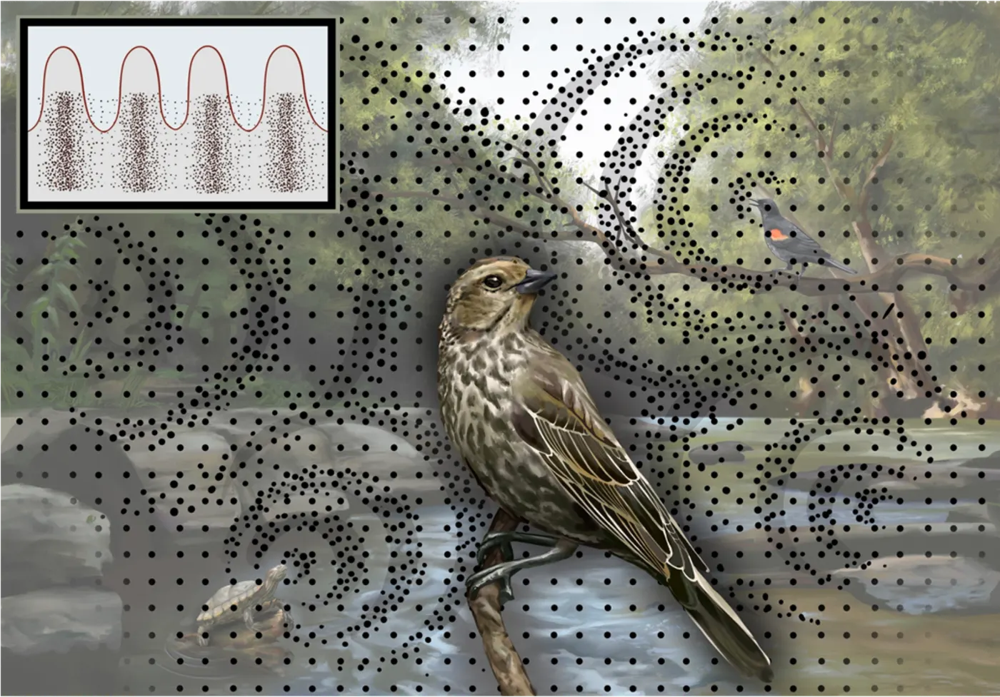
In contrast with cues, acoustic signals have evolved to allow one individual, called a sender, to influence the behavior of another individual, the receiver. Birdsong, for example, is a signal that communicates to female songbirds that a potential mate is nearby. The male sings with the intent of influencing females to approach and mate. In many species, the song also informs the female of how desirable the male is, because only healthy males can produce songs with a certain level of complexity (Nowicki and Searcy 2004). Acoustic mating displays are common throughout the animal kingdom, including many insects, fishes, amphibians, birds, and mammals.
Acoustic signals can also be used to broadcast the identity of the individual producing the signal, as long as receivers can distinguish the unique features of each individual’s signal. Individual recognition is particularly important to animals that live in large social groups where visual cues are not easily distinguished, as in a flock of nesting seagulls or a herd of elephants (McComb et al., 2000) or where individuals need to find each other over long distances, as in dolphins and other marine mammals (Sayigh et al., 1999).
Animals use acoustic signals to communicate to each other about more than just themselves. When social animals are foraging in large groups, a few individuals may keep watch and signal to the group about sources of danger. Acoustic signals have a particular advantage here because they can travel long distances and around obstacles that would block sight. For example, vervet monkeys have different kinds of alarm calls that indicate the presence of specific kinds of predators (Seyfarth and Cheney 1990). When one monkey sees a leopard, it makes the “leopard” call, and the other members of its troupe will climb into trees, even without themselves seeing the leopard. In contrast, when a monkey makes the “eagle” call, the troupe will hide in nearby bushes that are too thick for an aerial predator to enter. The monkeys’ auditory system must be able to discriminate between these signals for them to respond appropriately.
Humans have evolved a much more elaborate system of acoustic communication called speech, in which words are formed from combinations of distinct vocal elements called phonemes. For example, the vowels in the English words “bat” and “pat” are the same phoneme (/a/), whereas the initial consonants (/b/ and /p/) are different. One of the most important tasks of the human auditory system is to identify and discriminate between similar-sounding phonemes, and as we will see in How Does the Brain Process Acoustic Information?, this ability is shaped by the sounds an infant hears in the first year of life.
Some species produce acoustic signals for themselves to hear, with the purpose of detecting obstacles and prey in their environment. Because sound waves reflect from solids and liquids, they can be used for echolocation. The ability to echolocate has evolved separately in bats and in some aquatic mammals. Echolocating animals produce short vocalizations that reflect off nearby objects. Specialized neural circuits use the delay between the signal and its echo to determine distances to those objects, while other circuits compute the direction of the object (see How Does the Brain Process Acoustic Information?) and even some of its physical characteristics (Moss and Sinha 2003). A bat hunting by echolocation can easily discriminate between a solid obstacle and a delicious insect, and it can rapidly alter its course of flight to intercept the insect while avoiding the obstacles (Surlykke et al., 2009).
In summary, the sense of hearing serves many important functions for humans and other animals. Acoustic cues and signals are a critical source of information about predators, prey, obstacles, and dangers in the nearby environment, as well as the presence and intentions of conspecifics (other animals of the same species). In the next section, we will see how the physical nature of sound allows it to transmit this information in a way that complements the other senses.
How is sound produced?
What is sound? From the perspective of physics, sound consists of pressure waves moving through air or some other physical material. Waves are found throughout nature and share a common mathematical description. At the same time, acoustic waves have special properties that make them distinct from other kinds of waves.
To illustrate what a wave is, imagine throwing a rock into a still pool of water. When it hits the surface, the rock will displace some of the water, causing it to rise in a circle around the point of impact. Gravity pulls the displaced water back down, which in turn pushes up the water a little further out. This process repeats again and again to produce what we observe: a ripple traveling outward from the point of impact. An acoustic wave moves in much the same way, except that instead of a two-dimensional surface moving up and down, the molecules of the air move closer together and further apart, and the wave spreads in three dimensions.
Now instead of throwing a rock into a pool, imagine clapping your hands together. As your hands meet, they push air out of the space between them. Where does this air go? There is air all around your hands, but air is mostly empty space, so there is plenty of room for the displaced molecules of air to crowd in with the molecules that are already there. Now there is a region around your hands where the air is at a higher pressure, with an increased density of air molecules. The compressed molecules in the region of higher pressure push out into the surrounding space, which is less dense, or rarefied. This creates a new region of higher pressure, which in turn spreads further out from your hands. Just as the water ripple radiates out in a circle from a central point, the pressure wave created by your hands clapping radiates out in a sphere. If a microphone or some other pressure sensor is placed along the path of the wave, it will measure successive increases and decreases in the pressure at that location as the wave travels through space (Physical properties of acoustic waves).
It is important to notice that the individual air molecules do not move nearly as fast or as far as the acoustic wave. The air itself is not flowing, as in a wind. Instead, neighboring molecules are bumping into each other, and an individual molecule pushed out from a region of higher pressure may only travel a few nanometers before it collides with another molecule. Sound waves move through air at around 343 m/s, but this varies depending on temperature and elevation.
Acoustic waves can be described in terms of three principal quantities: amplitude, frequency, and phase. Amplitude (also called intensity or level) is a measure of how much the air pressure changes between compression and rarefaction. Clapping your hands more forcefully causes a larger increase in pressure and a wave with a higher amplitude. Amplitude is measured in units of pressure (in the metric system, Pascals); however, because the perception of acoustic amplitude follows a logarithmic scale, it is more often reported in units of decibels of sound pressure level (dB SPL). As shown in this figure, each step of 20 on the decibel scale corresponds to a proportional, ten-fold increase in the pressure.
![Top row: Sound pressure waves represented as dots of varying density. Below is a line graph of a sound wave with key features labeled: amplitude, period, pressure, time. 2nd row: Left: Image of string oscillating when held at each end. Middle: line drawing of a simple period wave. Right: Line graph of amplitude vs frequency of that simple wave. 3rd row: Left: Image of string oscillating when held at each end plus another separate string which is held at each end and also in the middle. Middle: line drawing of a complex periodic wave. Right: Line graph of amplitude vs frequency of that complex wave. 4th row: Left: Line drawing of turbelent air flow Middle: line drawing of an aperiodic wave. Right: Line graph of amplitude vs frequency of that aperiodic wave.](../assets/textbook/img/Image-7.26_Physical-properties-acoustic-waves.webp)
The frequency of a wave is a measure of how rapidly the air at one location changes from compressed to rarefied and back (Physical properties of acoustic waves). Frequency is measured in Hertz (Hz), the number of cycles that occur each second. The frequency of a sound wave is perceived as pitch. Low-frequency waves sound deep and rich, whereas high-frequency waves are perceived as sharp and thin.
The phase of a wave is a measure of time relative to the cycles of compression and rarefaction. Phase is not perceived directly, but it affects how different waves interact with each other.
Almost any process that displaces air molecules will result in an acoustic wave. One of the most common sources of sound is periodic vibration. You can generate periodic motion by plucking or striking a string that is under tension (for example, on a guitar, piano, or harp). Pluck it right in the middle, and listen to the sound while watching the string. The vibration will probably be too fast for your eyes to track, so the string will appear wide in the middle and narrow at the ends, as illustrated in Physical properties of acoustic waves. As it vibrates, the string compresses the air while moving in one direction and rarefies it while moving in the other. The vibrations tend to occur at a specific frequency that depends on the mass of the string, its length, and how tightly it is tensioned. The motion of the string and the sound wave it produces are described by a simple mathematical function called a sinusoid (or sine wave) with a single frequency and amplitude. The form of this function and its relationship to the physical properties of the string will be covered in most elementary physics texts.
| Amplitude | ||
|---|---|---|
| dB SPL | Pa | Example |
| 0 | 0.00002 | Mosquito 3 m away in silent room (human hearing threshold) |
| 10 | 0.000063 | Calm breathing |
| 30 | 0.00063 | A quiet office with computer off |
| 50 | 0.0063 | Normal conversation 1 m away |
| 70 | 0.063 | Comfortable music listening level |
| 90 | 0.63 | Traffic on a busy roadway |
| 100 | 2 | Jackhammer 1 m away |
| 120 | 20 | Jet engine 100 m away (risk of instantaneous noise-induced hearing loss) |
| 170 | 6300 | Firecracker 0.5 m away |
Now press the string down or pinch it at its midpoint before plucking it. The half that you pluck will vibrate twice as fast as the whole string did, producing a sound wave with twice the frequency. You might notice that the higher note sounds similar even though the frequency is higher. If you pinch the string three-quarters of the way and pluck the short part, the frequency will be four times as high, but the note will still sound similar. This is an illustration of how the perception of frequency is logarithmic, as we’ll discuss more later.
What happens if you pluck the whole string, but nearer to one end? You might notice that the note sounds richer and more complex, and that the movement of the string looks more complicated, without one clear wide part in the middle. Just as white light is composed of electromagnetic waves with frequencies spanning from red to violet, sounds can be composed of multiple waves with different frequencies. When the guitar string is plucked nearer the end, it will vibrate at the frequency corresponding to the full length of the string but also at twice that frequency (corresponding to half the length), three times that frequency (corresponding to one third of the length), and so on. A series of integer multiples like this is called a harmonic series. The lower-frequency and higher-frequency sound waves add together to produce complex harmonic motion. The specific combination of frequencies in a complex sound is called its spectrum. Most simple and complex periodic sounds are perceived as tones with a defined pitch that corresponds to the lowest frequency in the harmonic series.
Take a moment to think about this: you hear the string on the guitar as a single note, yet it is composed of several waves with different frequencies. As we will see later, each of these waves activates a different set of receptors in the inner ear and a different set of neurons that transmit information into the brain. In order for us to understand how audition works, we will need to understand how these different channels of information are combined by the brain to produce a single unified percept or split apart to distinguish between different sources, as when a person is singing along to the guitar.
Many species of animals generate sounds through periodic motion. The chirp of a cricket is produced by rubbing two textured surfaces on their wings together. The vocal folds in the mammalian larynx and the avian syrinx vibrate periodically as air is exhaled, and the frequency of the vibrations can be controlled by muscles that increase or relax the tension. In human speech (and even more so in singing), the vowels are produced by periodic movement of the vocal folds.
Sounds that do not have a regularly repeating pattern are not perceived as having pitch and are called aperiodic. The main sources of aperiodic sounds are transient collisions between surfaces and continuous, turbulent air flow. In turbulent air flow, the molecules are not all moving at the same speed and direction. This causes eddies and ripples to form as faster-moving air collides with slower-moving air, and the pressure variations in the ripples propagate outward as acoustic waves. Turbulent flow tends to occur whenever air is forced through narrow openings or disorderly obstacles like trees. You can make turbulent air flow by lightly pursing your lips and exhaling forcefully (but not forcefully enough to make a whistle). Aperiodic sounds do not contain a single frequency or even a regular combination of frequencies as in complex harmonic sounds. Instead, the pressure fluctuates at random across a broad range of frequencies. This is perceived as noise. A continuous sound that has equal amplitude across all frequencies is called white noise. Aperiodic sounds are also commonly used in acoustic communication. In human speech, many of the consonants are produced by aperiodic sounds.
How does sound travel and interact with objects?
Sound’s ability to travel through the air is what allows the auditory system to sense cues and signals coming from a distance. In this respect, the sense of hearing shares certain similarities with vision, but acoustic waves are much slower and have longer wavelengths than visible light. Humans can hear sounds with frequencies between approximately 20 and 20,000 Hz. In air, these frequencies correspond to wavelengths between 17 m and 17 mm. In contrast, visible light has wavelengths between 400 and 780 nm. In other words, whereas light waves are much, much smaller than most behaviorally relevant objects, sound waves are around the same size. As a consequence, acoustic waves exhibit a number of phenomena that are important to understanding how sound works.
First, sound waves can diffract around common objects. You can illustrate diffraction by placing a stone about 1 cm in diameter in the center of a shallow bowl of water. Tap the water near the edge of the bowl and watch how the ripples seem to pass right through the stone. This is diffraction. Waves can diffract around objects that are around the same size or smaller than the wavelength, which means that lower frequencies (longer wavelengths) are less likely to be blocked. Thus, a predator may be impossible to see when it hides behind a rock or a tree, but most of the noises it makes will simply pass around the object.
Second, solid objects are more likely to transmit sound waves than visible light waves. Low-frequency sounds in particular are more easily transmitted through solids, which is why you can hear construction noises through solid walls and the bass line from your downstairs neighbor’s music. At higher frequencies, solids tend to reflect sound. Reflections cause an acoustical phenomenon called reverberation, in which echoes of a sound reach the same point at slightly different times. For example, if you are in a large room with a concrete floor and metal walls, and someone a few meters away from you claps, you will hear not only the wave coming directly from the source to your ears, but all the other waves that reflect off the floor and the walls. The reflected waves have longer to travel, and because the speed of sound is around 343 m/s, there can be a perceptible delay between the time when the direct wave and its reflections arrive. Reverberations with long delays are heard as distinct echoes. Reverberations with short delays tend to fuse with the main sound, making it sound more “alive”. Surfaces that are soft or uneven are better able to absorb sound, reducing the intensity of the reverberation, and rooms that have little reverberation sound muffled or “dead”. With practice, people can learn to use the acoustical characteristics of different materials as cues to their location within a room, an ability akin to the specialized echolocation of bats and dolphins.
The long wavelengths and reflectiveness of sound cause another phenomenon called resonance. If sound waves enter a space where they can reflect back and forth between two surfaces, they will interact with each other through interference. If the sound has a wavelength the same as the distance between the two surfaces (or an integral fraction of the distance), the peaks and valleys of the wave going in one direction will overlap with the wave going in the other direction, leading to constructive interference. Wavelengths that are not an integral fraction of the difference will not overlap, leading to destructive interference. For complex sounds comprising waves of multiple frequencies, resonance boosts certain frequencies (wavelengths) while attenuating others. This effect is also known as filtering. When you blow across the mouth of a bottle, the aperiodic noise produced by turbulence resonates in the bottle, boosting a single frequency (and its harmonics) to produce a tone.
Filtering is important to the production of speech. Recall that vowels are produced by periodic motion of the vocal folds. But how do we make different vowels? You can illustrate this by singing “aah” and then changing to “ooh” while holding the same pitch. If you pay close attention to your tongue and lips, you’ll notice that the shape of your mouth changes as you transition between different vowels. What’s happening as you move those muscles is that the sizes of the oral and pharyngeal cavities in your airway are changing to create different resonances that boost and suppress specific frequencies in the sound coming from your larynx.
A consequence of these phenomena is that it is common for a listener to hear many different sound sources simultaneously. This is an advantage in that it is possible to hear sounds without having to look at them, to take in an entire auditory scene in full 360-degree surround, and to hear multiple instruments or singers making music together. It also makes a difficult task for the auditory system, which has to separate out multiple sound sources and determine their locations. As we shall see, the structure of the ear performs a part of this task, separating complex sounds into their component frequencies, but the central nervous system still has an enormous amount of work to do to transform auditory scenes into coherent perception.
Summary
Hearing is a critical sense that allows animals to detect objects and events in their environments. It is based on the perception of sound, acoustic pressure waves that travel through the air. Understanding the different ways sounds are generated and how sound waves interact with the physical environment lays the groundwork for examining how the ear senses sound and how the brain processes acoustic information.
Key terms
amplitude, complex harmonic motion, cue, decibels, diffraction, echolocation, filtering, frequency, interference, periodic/aperiodic, pressure, rarefaction, receiver, reflection, resonance, reverberation, sender, signal, sinusoid, spectrum, speechReferences
Fay RR (1988) Comparative psychoacoustics. Hear Res 34:295–305.
Jamie GA (2017) Signals, cues and the nature of mimicry. Proc Biol Sci 284:20162080.
Johnson K, Sherman VC, Sherman SG (2011). Acoustic and Auditory Phonetics. John Wiley and Sons.
McComb K, Moss C, Sayialel S, Baker L (2000) Unusually extensive networks of vocal recognition in African elephants. Anim Behav 49:1103–1109.
Moss CF, Sinha SR (2003) Neurobiology of echolocation in bats. Curr Opin Neurobiol 13:751–758.
Nowicki S, Searcy WA (2004) Song Function and the Evolution of Female Preferences: Why Birds Sing, Why Brains Matter. Ann N Y Acad Sci 1016:704–723.
Sayigh LS, Tyack PL, Wells RS, Solow AR, Scott MD, Irvine AB (1999) Individual recognition in wild bottlenose dolphins: a field test using playback experiments. Anim Behav 57:41–50.
Seyfarth RM, Cheney D (1990) The assessment by vervet monkeys of their own and another species’ alarm calls. Anim Behav 40:754–764.
Surlykke A, Ghose K, Moss CF (2009) Acoustic scanning of natural scenes by echolocation in the big brown bat, Eptesicus fuscus. J Exp Biol 212:1011–1020.
Practice The multiple-choice and fill-in-the-blank questions for this section are interactive and live on OpenStax, so they are not carried here: open the book on openstax.org.
7.2How Does Acoustic Information Enter the Brain?
By the end of this section, you should be able to
- Identify the major anatomical parts of the ear and describe their function.
- Explain how the cochlea separates complex sounds into their component frequencies and transduces acoustic energy into neural signals.
- Describe how neural information ascends to the cerebral cortex through the major nuclei and fiber tracts of the classical ascending auditory pathway.
In the previous topic, we’ve seen how the air is full of acoustic waves carrying cues and signals vital to survival. These waves consist of minute variations in air pressure that can be up to 10 billion times smaller than the overall pressure exerted by the atmosphere. In this topic, we will examine how the incredibly sensitive organ known as the ear is able to detect these tiny fluctuations and convert them to neural signals that the brain can process.
The ear consists of three main parts, shown in Ear anatomy: the external ear, the middle ear, and the inner ear. Auditory stimuli enter through the external ear as acoustic waves and exit the inner ear as neural impulses.
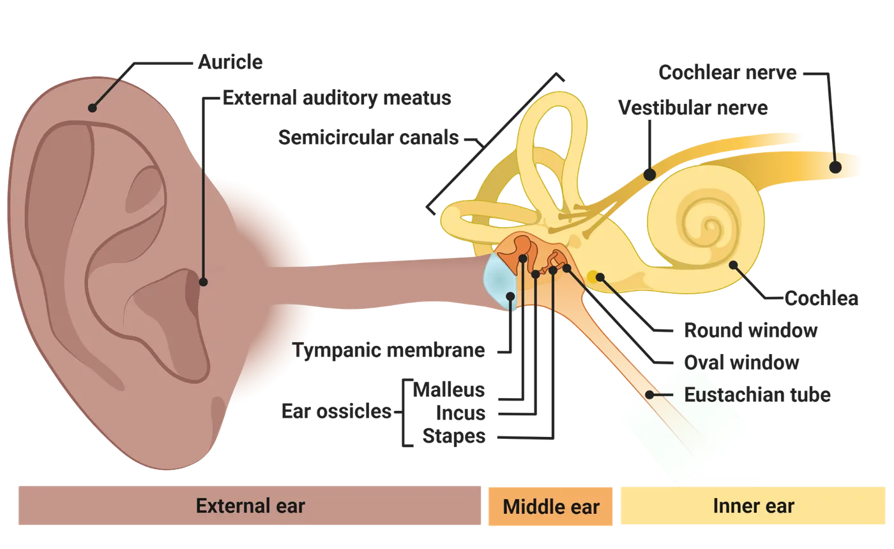
External ear
When someone is asked to point to their ears, they will usually indicate their auricles, structures of skin and cartilage on either side of their head. The shape of the auricles (also called pinna), differs greatly among species. Some species, like cats, can manipulate the shape of their pinna using muscles on the skull, while many other species, including most birds, amphibians, and reptiles, have no pinna at all.
The auricle serves two functions. The first is to funnel acoustic waves into the external auditory meatus (ear canal). This amplifies the waves by compressing them into a smaller opening, increasing the sensitivity of hearing by up to 10 dB. The second function is to aid in localizing sound sources. The ridges and folds in the auricle create resonant cavities that filter out specific frequencies that depend on the direction from which the sound is coming. As a simple experiment, filling the cavities of the auricles with modeling clay makes it considerably more difficult to tell where a sound is coming from with your eyes closed (Oldfield and Parker 1984).
Middle ear
Separating the external auditory meatus from the middle ear cavity is the tympanic membrane, a thin sheet of tissue. Like the tightly stretched surface of a drum, the tympanic membrane vibrates in response to acoustic waves in the ear canal. As compressed air reaches the membrane, it pushes it inward, because the pressure in the ear canal is slightly higher than the pressure in the middle ear. Similarly, when the air in the ear canal is at a lower pressure (rarefied), the tympanic membrane is pushed outward by the air in the middle ear.
In order for the tympanic membrane to vibrate effectively, the static pressure in the ear canal and the middle ear cavity need to be equal. The external atmospheric pressure depends on altitude, and a rapid change of altitude, as in a descending or ascending airplane, creates an imbalance that reduces hearing sensitivity, particularly for high frequencies. The Eustachian tube, which connects the middle ear to the oral cavity, allows the balance to be restored. Sometimes it is necessary to encourage the Eustachian tube to open by “popping your ears”. A bad cold or sinus infection can cause the Eustachian tube to close. This results in a persistent imbalance that can be acutely painful and even cause damage to the tympanic membrane. Infections of the middle ear, called otitis media, can cause the middle ear cavity to fill with fluid, causing a pressure imbalance if the fluid is unable to drain through the Eustachian tube.
In mammals, the middle ear cavity contains three bones: the malleus (hammer), the incus (anvil) and the stapes (stirrup). These bones are the smallest in the human body. Their function is to transmit the vibrations of the tympanic membrane to the inner ear, specifically the oval window of the cochlea. The middle ear bones form a mechanical lever that compensates for the large difference in the impedance of the air in the ear canal and the fluid inside the cochlea. As illustrated in Acoustic impedance, when air is on both sides of a barrier like the tympanic membrane, acoustic energy is efficiently transferred from one side to another because the molecules have the same size and density. They collide like billiard balls: one ball comes to a stop while the other absorbs its momentum and moves on with the same speed. However, when an acoustic wave in air collides with a fluid, the water molecules are densely packed, and much of the energy is reflected, like ping-pong balls bouncing off a bowling ball. The ear compensates for this impedance mismatch through mechanical advantage. The tympanic membrane has a surface area around ten times the size of the oval window. Its vibrations are captured by the stiff middle ear bones, which add further mechanical advantage by acting as levers. Without the middle ear, only a thousandth of the energy in airborne acoustic waves would make its way into the fluid filling the cochlea (Wever and Lawrence 1948).
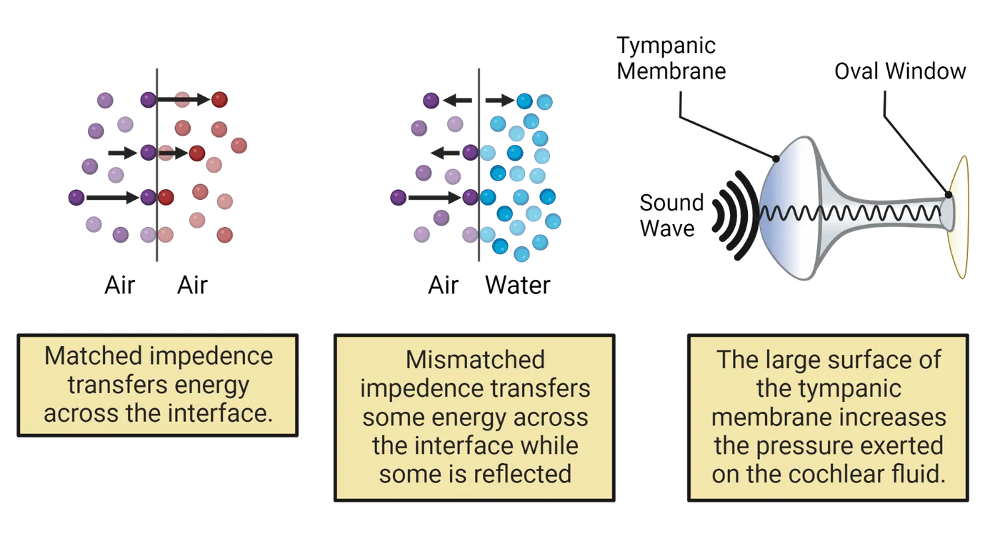
The impedance-matching of the middle ear can be compromised by buildup of scar tissue from repeated middle ear infections or by immobilization of the ligaments supporting the middle ear bones. This condition can result in a severe loss of hearing.
The middle ear also contains two muscles that attach to the middle ear bones, the tensor tympani and the stapedius (Acoustic reflex). These muscles adjust the tension of the tympanic membrane and the stiffness of the connection between the incus and stapes, respectively. These muscles allow the brain to control the gain of the middle ear. The stapedius reflexively contracts in response to high-intensity sounds and during self-vocalizations, causing a reduction in transmission through the inner ear by up to 25 dB (Pang and Peake 1986; Rosowski 1991). This reflex is an important protection against the damage that intense sounds can do to the inner ear, but like every reflex, there is some delay. Very sudden sounds like gunshots can therefore do significant harm.
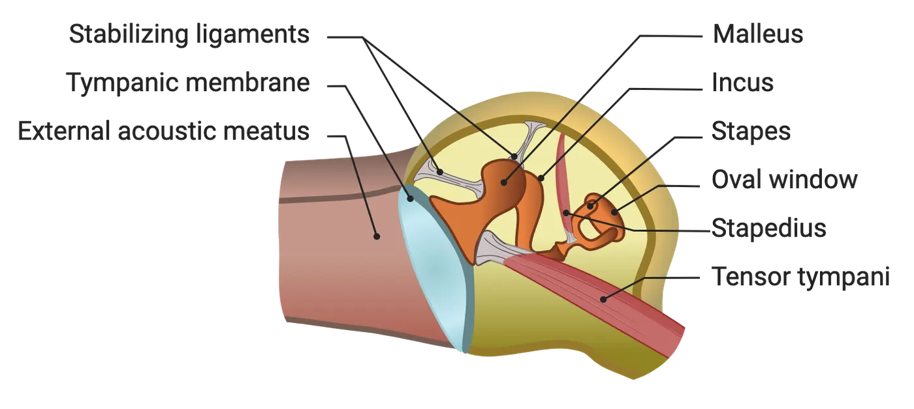
Inner ear
The inner ear is a hollow bony structure that contains epithelial tissue and fluid. It comprises the cochlea, which is involved in hearing, along with the semicircular canals, the utricle, and the saccule, which are part of the vestibular system. The cochlea gets its name from the Greek for “snail” because it is shaped like a spiral (in mammals).
Cochlea
The interior of the cochlea (Inner ear and cochlea) has a circular cross-section, divided into three fluid-filled compartments that run the length of the cochlear duct: the scala vestibuli, the scala media, and the scala tympani. The scala vestibuli begins at the base of the cochlea at the oval window, a membrane-covered opening that contacts the foot of the stapes. It connects to the scala tympani at the apex, the tip of the innermost spiral of the cochlea. The scala tympani terminates at the base of the cochlea in the round window, another membrane-covered opening. The fluid found in the scala vestibuli and scala tympani is called the perilymph. The scala media is a separate compartment filled with a different fluid called endolymph.
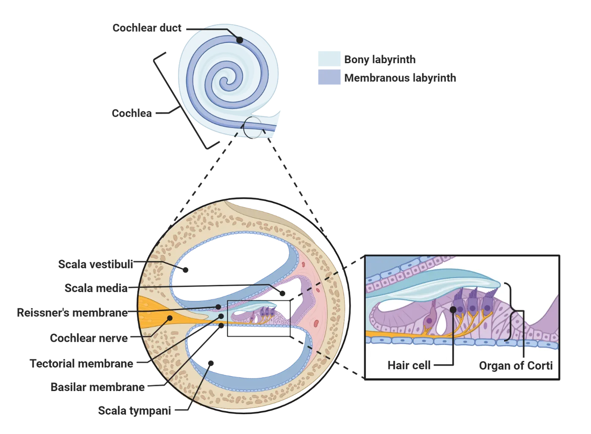
Basilar membrane
Acoustic waves enter the cochlea through the oval window via the stapes. As the stapes vibrates in and out, it pushes and pulls on the perilymph in the scala vestibuli and scala tympani, which in turn displaces the membrane covering the round window. Some of the energy of this wave, however, is absorbed by the basilar membrane, which stretches between the two walls of the cochlear duct and is able to move up and down. The basilar membrane varies systematically in thickness and width over its length. It is thickest and narrowest at the base and thinnest and widest at the apex (Unrolled cochlea). These physical properties translate into tuning for different frequencies, a phenomenon called resonance. Near the base, the basilar membrane resonates at high frequencies, around 20,000 Hz. Vibrations in the acoustic wave at these frequencies are absorbed into vertical displacements of the basilar membrane, while the lower-frequency components continue to travel down the scala vestibuli. The resonance of the basilar membrane becomes progressively lower, to about 20 Hz at the apex, so as the acoustic wave travels toward the apex, each segment of the basilar membrane absorbs energy at its resonant frequency (von Békésy G 1960; Rhode 1971).
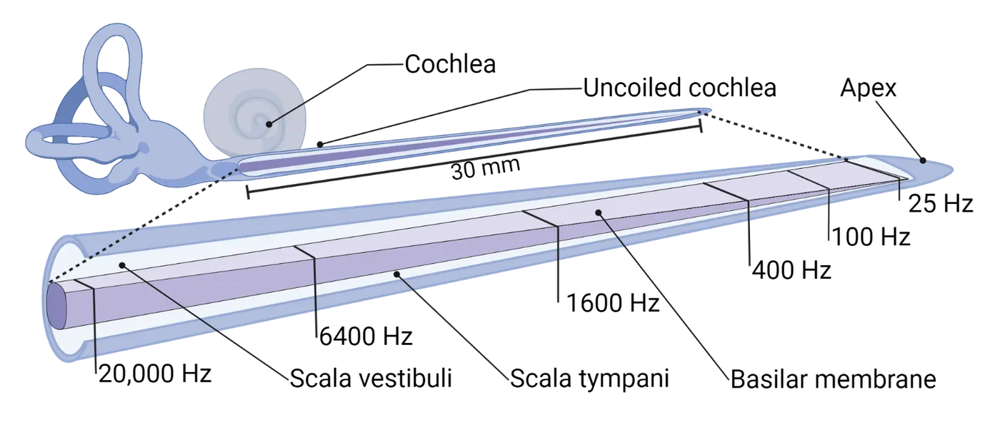
Take a moment to notice in Unrolled cochlea how the frequencies are spaced along the basilar membrane. About half of the length is dedicated to the frequencies between 25 and 1600 Hz; the other half goes from 1600 to 20,000 Hz, a much larger range. In other words, the relationship between frequency and position is not linear but (approximately) logarithmic. This organization may be related to how frequencies in a harmonic series are spaced logarithmically (i.e., integer multiples of the fundamental frequency). In humans, it may also reflect the fact that most of the information in speech is carried by relatively low frequencies (see How Does the Brain Process Acoustic Information?).
Although the physical principles are different, the way the basilar membrane separates complex sounds into waves of different frequencies is analogous to the way a prism can separate white light into its component frequencies (or colors). It is an essential first step in how the brain analyzes complex sounds. The organization of frequency (a non-spatial property of the sound) along the axis of the basilar membrane (a spatial dimension) is an example of topography. Because the ear contains a map of frequency, this topography is also known as tonotopy.
On top of the basilar membrane sits the organ of Corti, the epithelial membrane that transduces mechanical movements of the basilar membrane into neural impulses. The organ of Corti comprises four rows of hair cells along with a large number of various kinds of support cells. Hair cells are characterized by stereocilia arranged in a stairstep bundle that protrudes into the endolymph filling the scala media (SEM of cilia; . The organ of Corti is attached at one side to the tectorial membrane, forming a hinge. The tectorial membrane is a gelatinous structure that floats just above the tips of the hair cells’ stereocilia.
There are two types of hair cells in the organ of Corti. The inner hair cells form a single row nearest the hinge with the tectorial membrane. They are responsible for sensing the movement of the basilar membrane and transducing those movements into neural impulses. The other three rows are the outer hair cells. Their function is not to sense movement, but to help amplify low-intensity sounds.
Inner hair cells
The inner hair cells are in many ways the most important cells in the auditory system, because they are the sole point at which the physical energy of acoustic waves is converted into the electrochemical signals used by the nervous system. On one end, called the apical end, are the stereocilia, whereas the basal end makes a synapse with an afferent terminal from a single bipolar neuron in the spiral ganglion. There are about 3500 inner hair cells in the human cochlea.
As the basilar membrane vibrates up and down, the tectorial membrane slides back and forth in the transverse direction. The fluid between the organ of Corti and the tectorial membrane tends to remain stationary because of inertia, causing the stereocilia of the inner hair cells to deflect toward and away from the hinge. The tips of the inner hair cell stereocilia contain ion channels that are physically attached to the next-tallest cilium by a tip link. As illustrated in Tip link channel transduction, deflection of the stereocilia toward the taller edge of the bundle puts tension on the tip links, opening the ion channels and permitting potassium and calcium ions to enter the cell from the endolymph. This depolarizes the cell, causing voltage-gated calcium channels at the basal end of the hair cell to open, which in turn causes synaptic vesicles to fuse with the plasma membrane and release neurotransmitter into the synapse. Deflection of the stereocilia in the other direction relieves tension on the tip link, closing the ion channels, hyperpolarizing the cell, and stopping neurotransmitter release (Hudspeth 1985; Fettiplace 2017).
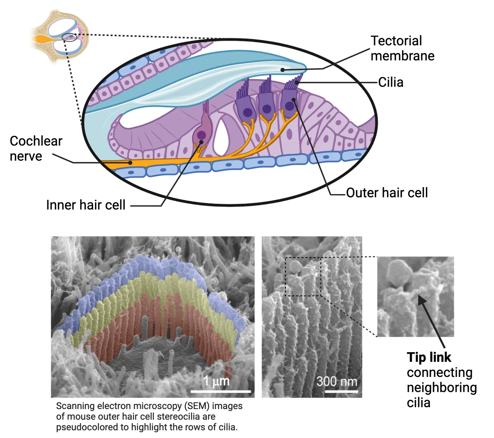
The transduction process in inner hair cells is exceptionally sensitive and fast. Sounds at the threshold of hearing produce basilar membrane movements of about 0.1 nm, about the diameter of a hydrogen atom, and movements of the stereocilia may be even smaller. The membrane potential of the hair cell responds to stereocilia deflection in as little as 10 µs, and a specialized ribbon synapse (Tip link channel transduction) allows neurotransmitter to be rapidly released onto the afferent fiber. The speed and fidelity of neurotransmission allows auditory nerve fibers to track frequencies as high as 1000 Hz or more, firing only at a specific phase of a periodic sound (Dynes and Delgutte 1992). Phase-locking is critical to one of the mechanisms the brain uses to determine the direction of a sound.
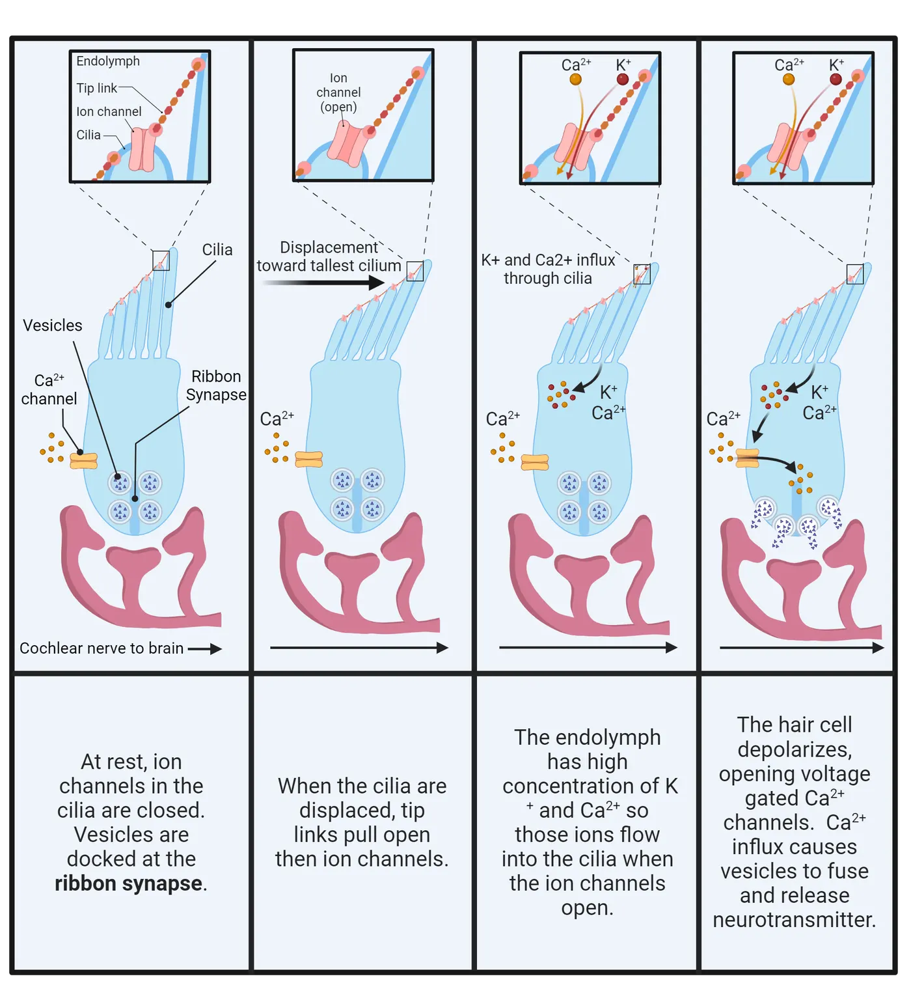
Outer hair cells
The other three rows of hair cells in the organ of Corti comprise the outer hair cells. Outer hair cells have a similar appearance to inner hair cells, but serve a different function. Whereas the inner hair cells primarily receive afferent connections that carry neural signals into the brain, the outer hair cells primarily receive efferent connections carrying signals out from the brain. When an outer hair cell is stimulated, either by deflection of its stereocilia or by synaptic transmission from efferent fibers, it changes its shape. This electromotive response, which is generated by the molecular motor prestin, can occur at frequencies up to 50 kHz, among the fastest cellular movements known (Zheng et al., 2000). Because the stereocilia of outer hair cells are embedded in the tectorial membrane, these movements are translated into the basilar membrane. This allows the brain to selectively amplify very weak sounds at specific frequencies (Dallos 1992). This is one of the major reasons why we are able to detect extremely low-intensity sounds. However, as anyone who has heard what happens when a microphone is placed directly in front of a loudspeaker can attest, amplifiers are sensitive to overstimulation. This means that the outer hair cells are easily damaged, leading to hearing loss.
Ascending auditory pathways
After the inner hair cells of the organ of Corti have transduced the mechanical deflection of their hair bundles into the release of neurotransmitter, the auditory stimulus propagates as neural impulses through a number of brain regions and fiber tracts on its way to the cerebral cortex. This ascending pathway is more complex than the pathways for other sensory systems, so there are more names and connections to learn. One reason for this complexity may be that information about the location of sound sources, arguably one of the most important tasks for the auditory system’s function in predator avoidance, needs to be extracted from the stimulus early on.
This section will focus on the anatomy of the classical ascending auditory pathway, the most prominent and best studied route by which auditory information enters the brain (Central auditory pathways). Although we may briefly note the function of some brain regions and pathways, a full discussion of the physiology and neural computations will be deferred to How Does the Brain Process Acoustic Information?.
Auditory nerve
The inner hair cells form synapses with the dendrites of auditory nerve cells, which are bipolar neurons with their cell bodies in the spiral ganglion, a thin strip of gray matter within the spiraling interior wall of the cochlea. The axons of these cells course together in the center of the cochlea to form the auditory branch of cranial nerve VIII. The auditory nerve also contains many efferent axons descending from the brain to the cochlea; these primarily make synapses with the outer hair cells.

Cochlear nucleus
All of the afferent axons in the auditory nerve terminate in the cochlear nucleus, located right at the junction between the medulla and the pons. The cochlear nucleus has three subdivisions: dorsal, posterior ventral, and anterior ventral. Each auditory axon branches twice to make synapses in all three subdivisions. The tonotopic organization of the cochlea is preserved in these projections, resulting in three complete maps of frequency within the cochlear nucleus, one per subdivision (Tonotopic oragnization auditory cortex). Almost all of the stations in the classical auditory pathway have a complete tonotopic map.
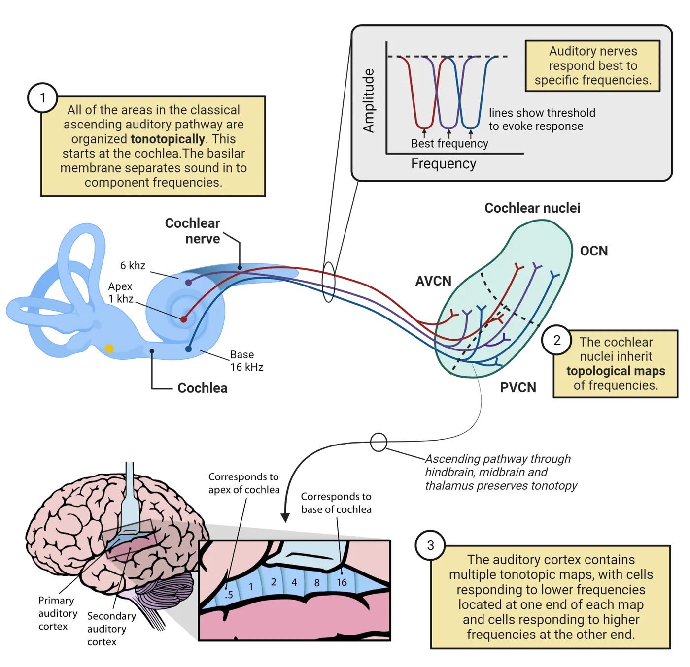
The neurons within the cochlear nucleus give rise to three major output pathways that cross the midline and then ascend up the brainstem through a bundle of axons called the lateral lemniscus.
Superior olivary complex
The superior olivary complex is the first station in the auditory pathway that receives input from both ears. It is located in the pons and comprises three main nuclei: the medial superior olive (MSO), the lateral superior olive (LSO), and the nucleus of the trapezoid body (NTB). These areas primarily receive input from the cochlear nucleus, and all three are involved in determining the location of sound sources using differences in the timing and level of stimuli arriving at the two ears.
Lateral lemniscus and nuclei
The lateral lemniscus is a tract that includes axons from ipsilateral and contralateral cochlear and superior olivary complex nuclei. Some of these axons form synapses in the nucleus of the lateral lemniscus (NLL), while others continue to ascend to the inferior colliculus.
Inferior colliculus
All the axons in the lateral lemniscus terminate in the inferior colliculus, the first midbrain auditory area and a major relay station. There are three major auditory areas within the inferior colliculus: the central nucleus, the external nucleus, and the cortex. Only the central nucleus is considered to be part of the classical pathway. Its main output is via the brachium of the inferior colliculus to the medial geniculate body, a nucleus in the thalamus. The central nucleus of the inferior colliculus also projects to the superior colliculus, an important midbrain area that integrates auditory, visual, and somatosensory input to create a unified map of space relative to head location. This map facilitates rapid orientation of the eyes and head to startling sounds.
Medial geniculate body
The medial geniculate body is a nucleus in the dorsal thalamus, and is the primary gateway for auditory information to reach the cerebral cortex. As such, it plays an important role in suppressing these inputs during sleep and boosting them during arousal. Like the inferior colliculus, the medial geniculate body has three main subdivisions: dorsal, ventral, and medial. Only the ventral medial geniculate body is considered to be part of the classical pathway. It receives input from the ipsilateral central inferior colliculus and sends its output to the ipsilateral auditory cortex, the primary auditory cortex.
Auditory cortex
Ascending auditory information in the classical pathway reaches the cerebral cortex in a region called primary auditory cortex, or A1. In humans, this area is located in the temporal lobe. As in other primary sensory areas, thalamic afferents primarily form synapses in layer 4. There are also inputs from the medial geniculate body onto two neighboring areas, secondary auditory cortex, and auditory association cortex.
The primary auditory cortex and its neighboring areas (sometimes called the core) together make up the first stage in a hierarchy of cortical areas. They each have a tonotopic map representing the full range of audible frequencies, and receive input from both ears. The core is surrounded by secondary cortical areas that receive auditory input via the core and also show tonotopic organization (shown in the bottom portion of Tonotopic oragnization auditory cortex). The secondary areas are heavily interconnected with each other, and appear to be involved in processing more complex acoustic features and in storing auditory memories. The secondary areas project to higher-order sensory association areas that receive input from more than one sensory modality (e.g., visual and auditory) and, in humans, to areas that are specialized for perception and production of speech. These higher-order areas project back to primary and secondary auditory areas. These top-down connections feed back information about context that can help parse complicated scenes by suppressing specific frequency bands and boosting others.
Bilateral processing and descending pathways
Auditory perception is inherently binaural, because one of its most essential and probably primitive functions is to localize acoustic cues. As we will see, this requires input from both ears. It is therefore unsurprising to find many connections between the hemispheres at multiple levels of the auditory pathway. For example, the cochlear nucleus not only makes connections to the superior olivary complex on the same side of the brain (ipsilateral), it also projects to structures on the opposite (contralateral) side of the brain, including the contralateral cochlear nucleus, superior olivary complex, nucleus of the lateral lemniscus, and inferior colliculus. There are also cross-hemisphere connections (called commissures) in the midbrain and in the cortex. One consequence of this extensive interconnection between hemispheres is that damage to one hemisphere of the auditory system, such as lesions caused by strokes, typically do not result in deafness on either side, though there may be deficits in localization.
Many of the ascending connections discussed in this section are paralleled by descending connections, axons traveling in the opposite direction from cortex to periphery. Indeed, descending connections from cortex to thalamus and other lower stations can far outnumber the ascending ones (Winer et al., 1998; Winer et al., 2001). These connections can modulate processing at almost every level down to the cochlea, where dynamic control of outer hair cells is thought to support dynamic amplification and filtering of signals of interest (de Boer et al., 2012).
Summary
In terrestrial vertebrates, acoustic signals are sensed by the ear. The external ear funnels sound waves into the ear canal and contributes to localizing sounds. The middle ear transforms oscillations in pressure into mechanical displacements of the fluid in the cochlea. The cochlea contains the basilar membrane, which separates complex sounds into their component frequencies, and the organ of Corti, which contains mechanosensitive hair cells that transduce movements of the cochlear endolymph into neural impulses. These neural impulses are processed in a series of interconnected nuclei called the ascending auditory pathway, eventually reaching the cerebral cortex.
Key terms
auditory cortex, auricles, basilar membrane, cochlea, cochlear nucleus, commissural connection, conductive hearing loss, endolymph, Eustachian tube, external ear, hair cell, impedance, incus, inferior colliculus, inner ear, inner hair cell, lateral lemniscus, lateral superior olive, malleus, medial superior olive, middle ear, organ of Corti, ototoxic, oval window, perilymph, positive feedback, round window, sensorineural hearing loss, stapedius, stapes, stereocilia, tectorial membrane, tensor tympani, thalamus, tonotopic organization, top-down, tympanic membraneReferences
Baguley D, McFerran D, Hall D (2013) Tinnitus. Lancet 382:1600–1607.
von Békésy G (1960) Experiments in Hearing. New York:McGraw-Hill.
Cant NB, Oliver DL (2018) Overview of Auditory Projection Pathways and Intrinsic Microcircuits. In: The mammalian auditory pathways: Synaptic organization and microcircuits (Oliver DL, Cant NB, Fay RR, Popper AN, eds), pp 7–39. Cham: Springer International Publishing.
Dallos P (1992) The active cochlea. J Neurosci 12:4575–4585.
de Boer J, Thornton ARD, Krumbholz K (2011) What is the role of the medial olivocochlear system in speech-in-noise processing? J Neurophysiol 107:1301–1312.
Dhanasingh A, Jolly C (2017) An overview of cochlear implant electrode array designs. Hear Res 356:93–103.
Dynes SB, Delgutte B (1992) Phase-locking of auditory-nerve discharges to sinusoidal electric stimulation of the cochlea. Hear Res 58:79–90.
Fettiplace R (2017) Hair Cell Transduction, Tuning, and Synaptic Transmission in the Mammalian Cochlea. Compr Physiol 7:1197–1227.
Fowler SL, Calhoun H, Warner-Czyz AD (2021) Music Perception and Speech-in-Noise Skills of Typical Hearing and Cochlear Implant Listeners. Am J Audiol 30:170–181.
Fridberger A, Tomo I, Ulfendahl M, Boutet de Monvel J (2006) Imaging hair cell transduction at the speed of sound: dynamic behavior of mammalian stereocilia. PNAS 103:1918–1923.
Guinan JJ (2011) Physiology of the Medial and Lateral Olivocochlear Systems. In: Auditory and vestibular efferents (Ryugo DK, Fay RR, eds), pp 39–81. New York, NY: Springer New York.
Hudspeth AJ (1985) The cellular basis of hearing: the biophysics of hair cells. Science 230:745–752.
Knipper M, Mazurek B, Dijk P van, Schulze H (2021) Too Blind to See the Elephant? Why Neuroscientists Ought to Be Interested in Tinnitus. J Assoc Res Otolaryngol 22:609–621.
Köppl C (1997) Phase locking to high frequencies in the auditory nerve and cochlear nucleus magnocellularis of the barn owl, Tyto alba. J Neurosci 17:3312–3321.
Kral A, Sharma A (2011) Developmental Neuroplasticity After Cochlear Implantation. Trends Neurosci 35:111–122.
Lin FR, Niparko JK, Ferrucci L (2011) Hearing loss prevalence in the United States. Arch Intern Med 171:1851–1852.
Merzenich MM, Michelson RP, Pettit CR, Schindler RA, Reid M (1973) Neural encoding of sound sensation evoked by electrical stimulation of the acoustic nerve. Ann Otol Rhinol Laryngol 82:486–503.
Mukerji S, Windsor AM, Lee DJ (2010) Auditory brainstem circuits that mediate the middle ear muscle reflex. Trends Amplif 14:170–191.
Oldfield SR, Parker SP (1984) Acuity of sound localisation: a topography of auditory space. II. Pinna cues absent. Perception 13:601–617.
Pang XD, Peake WT (1986). How Do Contractions of the Stapedius Muscle Alter the Acoustic Properties of the Ear? In: Allen J.B., Hall J.L., Hubbard A.E., Neely S.T., Tubis A. (eds) Peripheral Auditory Mechanisms. Lecture Notes in Biomathematics, vol 64. Heidelberg:Springer.
Rhode WS (1971) Observations of the vibration of the basilar membrane in squirrel monkeys using the Mössbauer technique. J Acoust Soc Am 49:1218–1231.
Robles L, Ruggero MA (2001) Mechanics of the mammalian cochlea. Physiol Rev 81:1305–1352.
Rosowski JJ (1991) The effects of external- and middle-ear filtering on auditory threshold and noise-induced hearing loss. J Acoust Soc Am 90:124–135.
Shaw E A C (1974) The external ear. In Keidel and Neff, Handbook of Sensory Physiology vol 1, pp 450-490, New York:Springer-Verlag.
Wagner EL, Shin J-B (2019) Mechanisms of Hair Cell Damage and Repair. Trends Neurosci 42:414–424.
Wever EG, Lawrence KR (1948) The Middle Ear in Sound Conduction. Arch Otolaryng 48:19–35.
Winer JA, Diehl JJ, Larue DT (2001) Projections of auditory cortex to the medial geniculate body of the cat. J Comp Neurol 430:27–55.
Winer JA, Larue DT, Diehl JJ, Hefti BJ (1998) Auditory cortical projections to the cat inferior colliculus. J Comp Neurol 400:147–174.
Zeng F-G (2020) Tinnitus and hyperacusis: Central noise, gain and variance. Curr Opin Physiol 18:123–129.
Zheng J, Shen W, He DZ, Long KB, Madison LD, Dallos P (2000) Prestin is the motor protein of cochlear outer hair cells. Nature 405:149–155.
Practice The multiple-choice and fill-in-the-blank questions for this section are interactive and live on OpenStax, so they are not carried here: open the book on openstax.org.
7.3How Does the Brain Process Acoustic Information?
By the end of this section, you should be able to
- Describe how circuits in the auditory system determine the location of sound sources by comparing the inputs arriving at each ear.
- Relate the physical characteristics of sounds to auditory perception.
- Describe how speech perception changes in early childhood and the role of experience-dependent neural plasticity in this process.
It is remarkable to consider how the flapping of a mosquito’s wings can set in motion a process that involves thousands if not millions of neurons. We have traced the pathway this process takes from the outer ear to the cerebral cortex, exploring the exquisitely sensitive mechanisms for amplifying acoustic waves, breaking them down into component frequencies, and converting them to neural impulses. We have followed these impulses as they jump from neuron to neuron along the auditory pathway, crossing the midline one or more times. This process is not just the passive transmission of information, however: at each station in the pathway, signals are filtered, refined, and compared between ears. This section will explore the complicated relationship between acoustic properties and perception.
Location
One of the most important functions of the auditory system is to locate nearby animals. If the other animal is a predator, knowing its location may enable it to be escaped. If the other animal is prey, knowing its location may allow it to be captured. In behavioral tests, humans can reliably pinpoint the location of sound sources to within several degrees (Oldfield and Parker 1984). The acuity of sound localization is highest in front of the head along the horizontal axis. In our own experience, the reflexive turning of the head to look at an unexpected sound is so natural and automatic, it may be difficult to appreciate how difficult the underlying calculations are. Yet evolution has solved this problem with incredible precision.
Interaural timing and level differences
The fact that animals have two ears is not simply a consequence of bilateral symmetry. Depending on the location of a sound source, the two ears will receive slightly different inputs. By comparing the inputs between the ears, the brain is able to determine the location of the source.
When we discuss auditory spatial cues, we are referring to location relative to the head (Locating sources of sound). More specifically, what the brain needs to determine is the angle of the source relative to some reference direction, which by convention is usually taken to be the front of the head. The angle of the source has two components: the azimuth, which is the angle to the left or right on a horizontal plane, and the elevation, which is the angle up or down from that plane. Because the ears are separated from each other by the head along the plane of the azimuth, the azimuth of a sound source will affect the relative level and timing at which the sound reaches each ear.
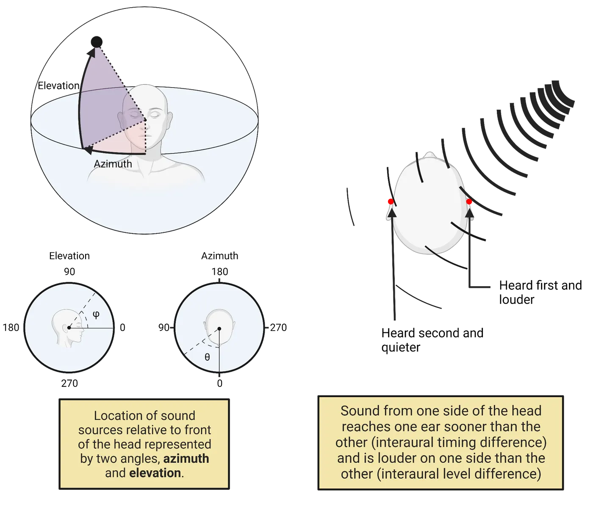
Level differences between the ears arise because the head casts an acoustic shadow. Incoming sound waves tend to reflect off the head or to be absorbed by it, so the ear that is closer to the sound source will receive pressure waves with a higher amplitude. This effect is more pronounced for higher frequencies, because low-frequency sounds can more easily transmit through the head and diffract around it. The interaural level difference is greatest when the sound source is 90 degrees to the left or the right, and zero when it is directly in front of (0 degrees) or behind (180 degrees) the head.
Timing differences between the ears arise because the speed of sound is finite (343 m/s at sea level). At 90 degrees azimuth, the distance between the ears in humans is around 0.2 m, corresponding to a delay of about 600 µs. By comparing the timing at which sound arrives at the two ears, it is possible to determine its azimuth. For transient sounds, this comparison involves the difference between the times when the pressure wave’s onset arrives at either ear. This difference is called the interaural time delay. Interaural time differences are more relevant cues for the location of low-frequency sounds, whereas interaural level differences are more important at high frequencies.
The elevation of a sound source does not produce interaural differences in level or timing. Nevertheless, humans and many other species can determine the elevation of sound sources thanks to the irregular shape of the auricles. The cavities and ridges of the auricle create resonances that selectively amplify some frequencies while dampening others, creating “notches” in the sound spectrum. These resonances depend on both the elevation and azimuth of the sound source (Oldfield and Parker 1984). Thus, by determining where there are notches in the sound spectrum, it is possible for the brain to determine elevation.
The cues for distance are subtle, and much less is known about how this percept is formed (Kolarik et al., 2016). Without any obstacles, sound attenuates with the square of the distance, so there is no difference in intensity between a source two meters away from one that is twice the distance but four times the amplitude. However, sounds coming from greater distances have the opportunity to interact with more objects, resulting in greater reverberance. It is likely that the perception of distance relies on such cues.
Neural circuits involved in decoding location
The superior olivary complex is the primary brain structure involved in determining azimuthal location. The medial superior olive compares timing between the two ears, whereas the lateral superior olive compares levels between the ears (Neural circuits for decoding sound location).
![Top: Left: Line graph od Response v ITD in micro-seconds, showing an oscilating wave. Right: a diagram of a section of brainstem with pathways from the right and left cochlea to the AVCN, which then project to the MSO. Bottom: Left: Line graph od #spikes v ILD in decibels with I > c on the left, 0 i the middle and C>I on the right., showing curve that starts high then drops low at ~0 decibels. Right: a diagram of a section of brainstem with pathways from the right and left cochlea to the AVCN, which then project to the LSO. Left AVCN projections have a relay though MNTB before the LSO.](../assets/textbook/img/Image-7.28_Neural-circuits-for-decoding-sound-location.webp)
One of the earliest models for how the brain might calculate timing differences is the coincidence detector. As proposed by Jeffress (1948), if a neuron receives input from both ears, neither of which alone is enough to make it spike, then it will only fire when the two inputs are active coincidently (i.e., at the same time) (see Introduction). If the pathways from the ipsilateral and contralateral ear are the same length, then coincidence will only occur when the sound arrives at both ears simultaneously, from directly in front (0 degrees) or behind (180 degrees). If the ipsilateral pathway is slightly shorter, then the neuron will respond best when the input arrives at the contralateral ear slightly before the ipsilateral one. By systematically varying the relative lengths of the axons, an array of such coincidence detectors would be able to represent timing differences as a place code, much as different frequencies are represented in a tonotopic map. In birds, the medial superior olive appears to implement just such a detector (A model of coincidence detection for sound localization). It receives inputs from the contralateral and ipsilateral cochlear nucleus, and the incoming axons, in many species, branch to form an orderly array, with the shortest paths from the ipsilateral side at one end and the longest paths at the other. In further support of this model, electrophysiological recordings from the medial superior olive reveal that neurons in this area respond preferentially to specific interaural time differences (Joris et al., 1998). The calculation of interaural time differences in mammals uses a similar principle, but is implemented differently (Lesica et al., 2010).
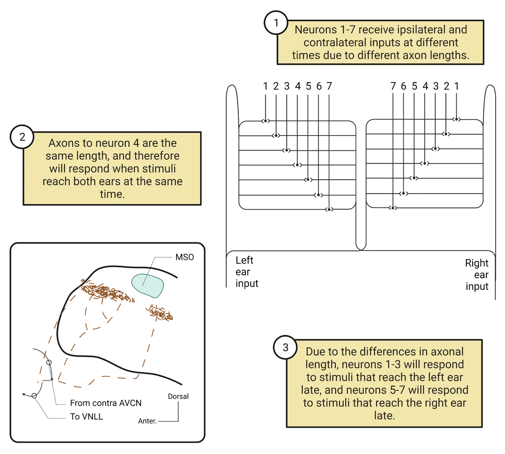
Differences in level between the two ears are computed by the lateral superior olive, which receives excitatory input from the ipsilateral ear and inhibitory input from the contralateral ear (via the nucleus of the trapezoidal body). The firing rates of these inputs are proportional to the sound level in each ear. Neurons in the lateral superior olive add together the excitatory (positive) and inhibitory (negative) inputs, so their firing rate represents the difference in the sound level between the ears.
Spatial information from the superior olivary complex propagates forward through the auditory pathway, and as it does, inputs from the medial and lateral superior olive combine to integrate information about timing and level differences. This results in a coherent, unitary perception of sound location.
Perceptual contents
In addition to determining the locations where sounds originate, the auditory system also has to determine what is making the sounds. These complex identifications are based on patterns of simpler spectral and temporal features of the sounds. In other words, we can describe complex sounds like “bird singing” or “lion roaring” in terms of simpler perceptual features. In this section, we will examine some of these perceptual features and how they relate to the physical properties of the sound, then describe some of the neural circuits involved in decoding these features.
Loudness, pitch, and timbre
In Acoustic Cues and Signals, we learned that acoustic waves can be described in terms of three quantities: amplitude, frequency, and phase. Simple, sinusoidal sounds have a single value for each of these quantities. Complex sounds are combinations of simple sinusoids, which means that they can be described as a spectrum of frequencies, each with its own amplitude and phase. The basilar membrane decomposes complex sounds into their constituent frequencies, but how are these complex patterns of activation perceived?
Acoustic amplitude (or intensity) is perceived as loudness. Sounds with higher amplitudes sound louder. The relationship between physical amplitude and perceived loudness is geometric (also called logarithmic), which means that proportional increases in amplitude are perceived as linear increments in loudness. Because intensity is usually reported using the logarithmic decibel (dB) scale (see Acoustic Cues and Signals), a linear step in decibels of intensity corresponds to a linear step in perceived loudness. In other words, the perceived difference in loudness between a 65 dB tone and a 75 dB tone is the same as the perceived difference between a 70 dB tone and an 80 dB tone. This relationship only holds if the cochlea is healthy and undamaged, and if the intensity is within the range of human hearing. Below 0 dB, sounds are inaudible, and above 120 dB, the perception of loudness is distorted by saturation (i.e., overstimulation) of the physical and neural processes of transduction.
Frequency is perceived as pitch. Similarly to loudness, this is a geometric relationship. A doubling of frequency corresponds to a perceived pitch interval of one octave, regardless of where you are on the musical scale.
Periodic sounds usually contain multiple frequencies. It is very rare to hear pure sinusoidal tones. When physical objects vibrate, they often produce a harmonic series. consisting of frequencies that are integer multiples of the lowest frequency. Such sounds are perceived as having a pitch corresponding to the lowest frequency in the series, the fundamental frequency. The numerical relationship between harmonics influences the perception of tonality, or how different pitches sound in relation to each other. For example, tones that are an octave apart sound “the same” because the harmonics of the higher note overlap completely with the harmonics of the lower note.
The higher harmonics (also called overtones) are not heard as distinct tones, but instead influence perception of timbre. Timbre is a qualitative rather than a quantitative percept (McAdams 2019). It may be difficult to describe how a clarinet sounds in words, but it is easy to distinguish it from a violin or a French horn, even when they are playing notes of the same pitch. This is because, as illustrated in Perception of auditory features, the relative distribution of amplitude in the harmonics a clarinet produces is different from the distribution of amplitude in the same harmonics produced by a violin.
Surprisingly, the perception of pitch does not require hearing the fundamental frequency. Even when the fundamental frequency is filtered out from a note, listeners perceive the sound as having the same pitch (Plack and Oxenham 2005). This observation clearly shows that the perception of pitch is constructed by the auditory system and that it requires neural circuits to integrate information across multiple frequencies.
Neural circuits decoding contents
Much less is known about how the brain decodes the perceptual contents of auditory stimuli. Natural sounds often comprise multiple frequencies and extend over time, so the neural circuits that decode contents and identify sources need to integrate over multiple frequencies and over time. Even the perception of loudness, though it primarily depends on amplitude, is not entirely straightforward. Amplitude is encoded at the earliest stages of audition. Amplitude affects the displacement of the basilar membrane and hair cell stereocilia, and the firing rate of auditory nerve fibers is proportional to amplitude. This representation of amplitude is maintained throughout the auditory pathway, with most neurons firing more rapidly to more intense stimuli. However, the perception of loudness also depends on duration. Shorter bursts of white noise sound quieter than longer bursts even when they are the same amplitude (Scharf 1978). This implies that the auditory system is keeping a memory of intensity over short intervals of time through temporal summation (or integration).
Conversely, the perception of pitch and timbre requires integration across multiple frequencies. Auditory nerve fibers are tuned to single frequencies corresponding to the region of the basilar membrane they innervate. Many neurons throughout the ascending auditory pathway share this selectivity, but increasingly larger proportions of neurons respond strongly to more than one frequency. These “multi-peak” neurons are prevalent in the auditory cortex (Winter 2005); interestingly, many of these neurons are tuned to frequencies that are integer multiples of a fundamental frequency, just like the harmonics in a complex periodic sound (see Perception of auditory features). This suggests that these neurons may be involved in the perception of pitch (Wang 2013).
The auditory cortex is also likely to be the site where short-term and long-term memories of specific sounds and acoustic patterns are stored. Electroencephalography and neuroimaging studies in humans consistently show that responses to complex sounds or to deviations from expectations (a form of memory) are centered in the auditory cortex (Demany and Semal 2008) (see Methods: Electroencepaholography). In nonhuman animals, training to recognize or discriminate complex sounds results in neural plasticity within the auditory cortex, implying that the memories associated with the animals’ newly acquired perceptual abilities are formed within the cortex (Bao et al., 2013).
Speech and other communication signals
Acoustic communication signals are often complex, consisting of periodic and aperiodic sounds. The frequency and amplitude of these components are often dynamic, changing over time. To illustrate, Spectrograms of birdsong and human speech shows a spectrogram of a song sparrow singing (top) and the author speaking a phrase (middle). Spectrograms are two-dimensional plots of how the spectrum of a complex sound changes over time. Frequency is shown on the y-axis, time on the x-axis, and the relative amplitude by the intensity or color of the plot. The sparrow song consists of a series of different kinds of tonal (periodic) sounds in rapid succession. Some of the tonal sounds have clear harmonics, indicated by parallel lines at integer multiples of the lowest frequency. In other sounds, there is only a single frequency, but it is rapidly modulated up or down to produce chirps and trills. The human speech consists of long tonal components, corresponding to vowels, transients spanning the whole range of frequencies, corresponding to consonants like “t”, “b”, and “k” where the flow of air is stopped by the tongue or lips, and broadband aperiodic noises, corresponding to consonants like “s” where turbulent air is passing through the teeth.
In this section, we will focus on human speech, one of the most important stimuli our auditory system has to process.
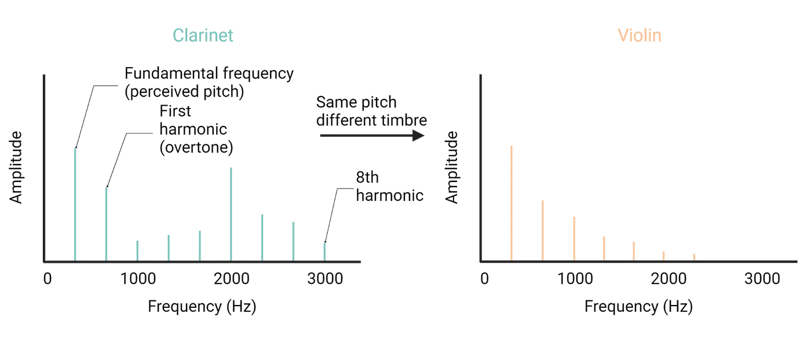
The acoustic and phonetic structure of speech
Human speech consists of a series of periodic and aperiodic sounds. Speech sounds are produced by the movement of air through the vocal tract. The parts of the vocal tract that are moved to shape the air stream and produce speech sounds are called articulators.
The main articulator for speech is the larynx, and more specifically, the vocal folds, bands of muscle tissue in the center of the airway. In normal breathing, the vocal folds are relaxed, and air is able to pass through freely. In speaking or singing, the folds are tightened and the air pressure from the lungs increases, causing them to vibrate open and closed. This vibration, also called phonation, produces a periodic wave that forms the basis for vowels.
In most languages, vowels are distinguished not by the fundamental frequency of the vocal fold vibrations, but by how this sound, which is rich in harmonics, is filtered in the upper vocal tract. Positioning the tongue and lips creates cavities of different sizes and shapes. The resonances of these cavities act as filters, producing peaks in the vocal spectrum called formants.
Consonants are phonemes that occur at the beginnings and ends of vowels. They can be produced by starting and stopping air flow through the vocal tract, or by restricting its flow through a narrow opening, producing turbulence.
As you might imagine, the human vocal system can produce a great variety of different vowels and consonants. Not every speech sound, or phone, is used in every language, however, and different phones may be used interchangeably. A group of phones that can be used interchangeably is called a phoneme. In English, the phones [r] and [l] are distinguished from each other: switching [r] for [l] causes the meaning of a word to change (for example “right” and “light”). The same is not true in Japanese: there is only a single phoneme that includes the whole range of sounds between [r] and [l].
Phonetic perception is categorical: acoustically dissimilar stimuli can be perceived as identical. This phenomenon was demonstrated by Alvin Liberman and Ignatius Mattingly, two pioneers of speech perception, using synthetically generated speech (Liberman et al., 1957; Liberman and Mattingly 1985). As illustrated in Categorical perception of phonemes, when the shape of the onset of a consonant-vowel syllable is systematically shifted, English-speaking listeners report hearing either “ba”, “da”, or “ga”. Even though the acoustic difference in each step is the same, this linear acoustic relationship is not reflected in what listeners perceive. Rather, listeners hear sudden transitions from one phoneme to another (there is no percept midway between “ba” and “da”), and they are unable to distinguish sounds within the same category from each other.
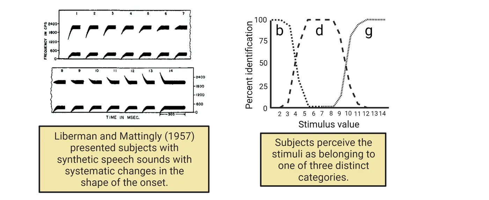
Categorical perception results in a many-to-one mapping between the acoustic structure of speech and phonetic perception. At some level of the auditory pathway, the brain must be responding the same way to different stimuli (Holt and Lotto 2010). This is a critical feature of vocal communication, because it allows us to understand the same words and phonemes produced by different individuals despite wide variations in pronunciation. It also allows us to understand the same phoneme produced by the same individual in different contexts, at different frequencies, and with different emphases.
Developmental Perspective: Normal development of phonetic perception
Different languages have different sets of phonemes, and categorical perception tends to follow the phonetic structure of the listener’s native language. In other words, individuals who grow up hearing English may not be able to hear the difference between sounds that form two distinct phonemes in another language. This observation suggests that phonetic perception is shaped by experience. Moreover, the older people get, the more difficult it is for them to learn to perceive the phonemes of a new language. They hear the new language through the lens, so to speak, of their native language, which makes it more difficult to rapidly process speech or correct an accent. These observations imply that the effect of experience on perception is limited to a narrow window during development, i.e. a critical period (see Introduction).
Work by Patricia Kuhl and Janet Werker has revealed how phonetic perception is established early in life (Werker and Tees 1984; Kuhl et al., 2006). Prior to about 6 months of age, infants from all over the world, raised in environments where different languages are spoken, can discriminate between all of the phonemes found in all languages. However, by 9–12 months of age, infants become better at discriminating phonemes in the language of their parents or caregivers and worse at discriminating phonetic contrasts not found in that language (Infant perception of phonetic contrasts). Children raised hearing Japanese lose the ability to distinguish [r] from [l]. In contrast, children raised in English-speaking environments stop being able to tell apart “dental” [t], made by placing the tongue against the teeth, from “retroflex” [T], formed by placing the tongue against the roof of the mouth; these sounds are distinct phonemes in Hindi but not in English. This shift, which commits the infant to a certain way of hearing speech, is echoed by changes in how the brain responds to native and nonnative phonemes (Bosseler et al., 2013). This commitment is necessary for normal language development (Tsao et al., 2004), but it makes it increasingly difficult for children to hear other languages as native speakers do. This could explain why children who begin learning a language later in life are more likely to speak with an accent (Piske et al., 2001), because they would have a harder time hearing their own mispronunciations and correcting their errors.
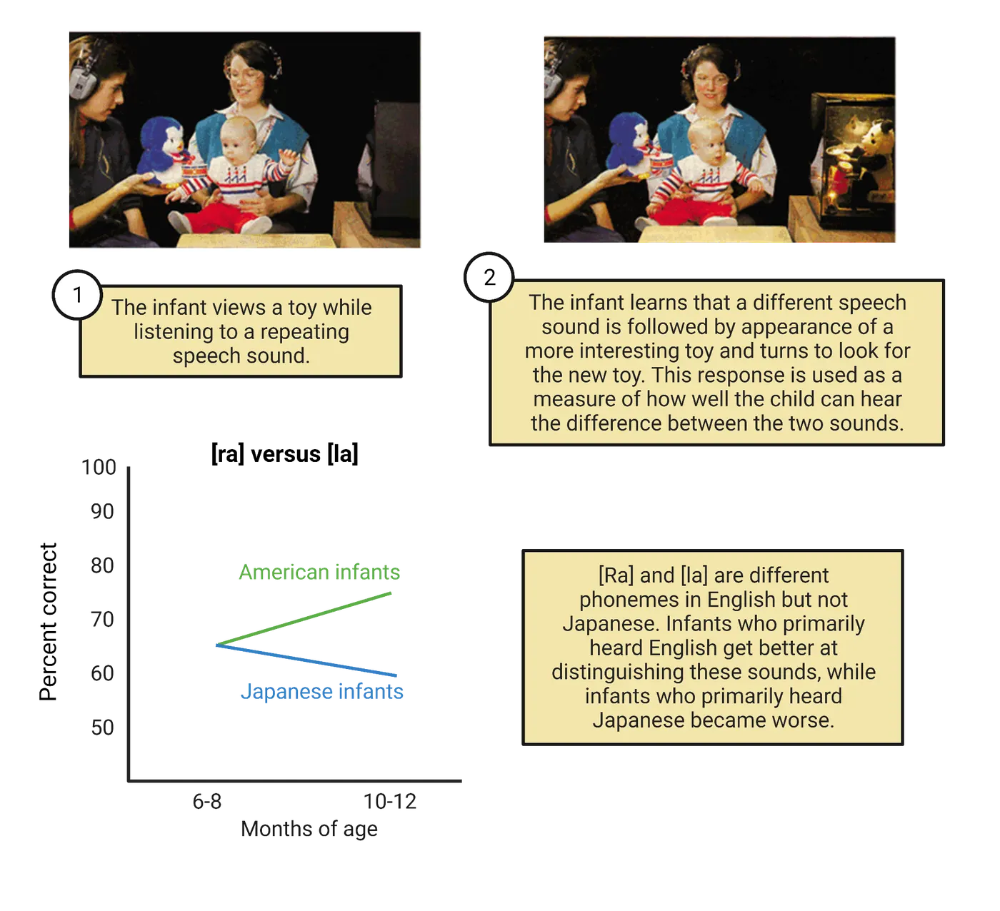
Summary
The neural circuits of the auditory system process incoming stimuli to determine where sounds are coming from and what is making them. The locations of sound sources are determined early in the auditory pathway, primarily by comparing the relative timing and level of sounds arriving at the two ears. Neural circuits later in the auditory pathway are responsible for decoding information about what is being heard. Many complex sounds are perceived in terms of basic features of pitch, loudness, and amplitude, while other sounds like speech are perceived as discrete categories. In humans, the perception of phonetic speech categories emerges early in life as a consequence of experience.
Key terms
articulator, azimuth, categorical perception, elevation, formant, fundamental frequency, harmonic series, intensity, interaural level difference, interaural time delay, larynx, loudness, operant conditioning, phase, phonation, phone, phoneme, place code, psychometric curve, spectrum, threshold plot, vowel, Weber-Fechner scalingReferences
Bao S, Chang EF, Teng C-L, Heiser MA, Merzenich MM (2013) Emergent categorical representation of natural, complex sounds resulting from the early post-natal sound environment. Neuroscience 248:30–42.
Bosseler AN, Taulu S, Pihko E, Mäkelä JP, Imada T, Ahonen A, Kuhl PK (2013) Theta brain rhythms index perceptual narrowing in infant speech perception. Front Psychol 4:690.
Demany L, Semal C (2008) The Role of Memory in Auditory Perception. In: Auditory Perception of Sound Sources (Yost WA, Popper AN, Fay RR, eds), pp 77–113. New York: Springer International Publishing.
Dreyer A, Delgutte B (2006) Phase locking of auditory-nerve fibers to the envelopes of high-frequency sounds: implications for sound localization. J Neurophysiol 96:2327–2341.
Holt LL, Lotto AJ (2010) Speech perception as categorization. Atten Percept Psychophys 72:1218–1227.
Jeffress LA (1948) A place theory of sound localization. J Comp Physiol Psychol 41:35–39.
Johnson K, Sherman VC, Sherman SG (2011). Acoustic and Auditory Phonetics. John Wiley and Sons.
oris PX, Smith PH, Yin TC (1998) Coincidence detection in the auditory system: 50 years after Jeffress. Neuron 21:1235–1238.
Kolarik AJ, Moore BCJ, Zahorik P, Cirstea S, Pardhan S (2016) Auditory distance perception in humans: a review of cues, development, neuronal bases, and effects of sensory loss. Atten Percept Psychophys 78:373–395.
Kuhl PK, Stevens E, Hayashi A, Deguchi T, Kiritani S, Iverson P (2006) Infants show a facilitation effect for native language phonetic perception between 6 and 12 months. Dev Sci 9:F13–F21.
Lesica NA, Lingner A, Grothe B (2010) Population coding of interaural time differences in gerbils and barn owls. J Neurosci 30:11696–11702.
Liberman AM, Harris KS, Hoffman HS, Griffith BC (1957) The discrimination of speech sounds within and across phoneme boundaries. J Exp Psychol 54:358–368.
Liberman AM, Mattingly IG (1985) The motor theory of speech perception revised. Cognition 21:1–36.
McAdams S (2019) The Perceptual Representation of Timbre. In: Timbre: Acoustics, perception, and cognition (Siedenburg K, Saitis C, McAdams S, Popper AN, Fay RR, eds), pp 23–57. Cham: Springer International Publishing.
Nakamoto KT, Jones SJ, Palmer AR (2008) Descending projections from auditory cortex modulate sensitivity in the midbrain to cues for spatial position. J Neurophysiol 99:2347–2356.
Oldfield SR, Parker SP (1984) Acuity of sound localisation: a topography of auditory space. I. Normal hearing conditions. Perception 13:581–600.
Piske T, MacKay IR, Flege JE (2001) Factors affecting degree of foreign accent in an L2: A review. J Phon 29:191-215.
Plack CJ, Oxenham AJ (2005) The Psychophysics of Pitch. In: Pitch: Neural coding and perception (Plack CJ, Fay RR, Oxenham AJ, Popper AN, eds), pp 56–98. New York, NY: Springer New York.
Scharf B (1978) Loudness. In: Carterette EC, Friedman MP (eds) Handbook of Perception, IV: Hearing. New York: Academic Press, pp. 187–242.
Schnupp JWH, Honey C, Willmore BDB (2013) Neural Correlates of Auditory Object Perception. In: Neural correlates of auditory cognition (Cohen YE, Popper AN, Fay RR, eds), pp 115–149. New York, NY: Springer New York.
Tsao F-M, Liu H-M, Kuhl PK (2004) Speech perception in infancy predicts language development in the second year of life: a longitudinal study. Child Dev 75:1067–1084.
Wang X (2013) The harmonic organization of auditory cortex. Front Syst Neurosci 7:114.
Werker JF, Tees R (1984) Phonemic and phonetic factors in adult cross-language speech perception. J Acoust Soc Am 75:1866–1878.
Winter IM (2005) The Neurophysiology of Pitch. In: Pitch: Neural coding and perception (Plack CJ, Fay RR, Oxenham AJ, Popper AN, eds), pp 99–146. New York, NY: Springer New York.
Zhang LI, Bao S, Merzenich MM (2001) Persistent and specific influences of early acoustic environments on primary auditory cortex. Nat Neurosci 4:1123–1130.
Zhou X, Merzenich MM (2008) Enduring effects of early structured noise exposure on temporal modulation in the primary auditory cortex. PNAS 105:4423–4428.
Practice The multiple-choice and fill-in-the-blank questions for this section are interactive and live on OpenStax, so they are not carried here: open the book on openstax.org.
7.4Balance: A Sense of Where You Are
By the end of this section, you should be able to
- Identify the anatomical structures of the vestibular system.
- Describe how linear and angular acceleration are transduced into neural signals.
- Identify vestibular reflexes and the associated neural circuits.
The auditory system, responsible for the sense of hearing, is closely associated with the vestibular system, which is responsible for the sense of balance and for helping the brain to track the body’s movements in space. Both systems use mechanosensitive hair cells to transduce physical forces into neural signals, and the vestibular hair cells are located within the same organ as the cochlear hair cells. Both systems also send their input to the brain via cranial nerve VIII. However, central processing of vestibular inputs involves different pathways and brain areas, and the behavioral consequences are different as well.
Sensing angular and linear movements
As animals move around in the world, they undergo many changes in position and orientation. These movements occur within the earth’s gravitational field, which exerts a force that must be resisted to avoid falling over. To understand how the vestibular system tracks these movements and forces, it is necessary to consider some elementary physics.
Movements in space can be linear or angular (see Angular and linear movement). Linear movements are changes in the position of the animal’s center of mass. These can occur along any of the three dimensions of space, or some combination of directions. From the animal’s frame of reference, these are up and down, left and right, and forward and backwards. Angular movements are changes in the orientation of the animal around the center of mass. These can also occur along three dimensions: pitch, roll, and yaw. Pitch corresponds to nodding the head, yaw to shaking it from side to side (like indicating “no”), and roll to tipping it sideways (like getting water out of your ear). If the animal is at rest, any change in linear or angular position requires a change in linear or angular velocity. A change in velocity is called acceleration. According to Newton’s first law, acceleration is proportional to net force. The forces produced by acceleration are dynamic. Bodies are also subject to the static force produced by gravity. Much as the cochlea has evolved to sense the forces produced by acoustic pressure, the vestibular labyrinth has evolved to sense the forces produced by acceleration of the head and by the earth’s gravitational field.
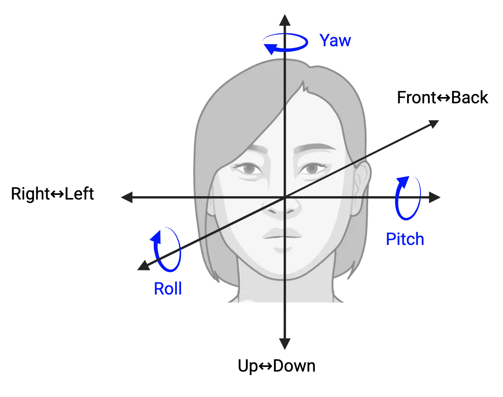
The vestibular labyrinth is a fluid-filled structure connected to the cochlea and sharing the same endolymph (Otolith organs). In humans, the labyrinth consists of the anterior, posterior, and lateral semicircular canals, three swellings at the base of the canals called ampullae, and two larger swellings called the utricle and the saccule, which together are called the otolith organs.
The semicircular canals and ampullae are responsible for sensing the dynamic forces created by angular movements. They are arranged at right angles to each other. The anterior and posterior canals sense a combination of pitch and roll, and the lateral canal senses yaw. When the head is rotated along a plane parallel to the canal, the inertia of the endolymph causes it to stay still while the surrounding bony and membranous structure moves. This relative motion between the fluid and surrounding tissue exerts a force on the cupula, a gelatinous mass found in each of the three ampullae, atop the ampullary crest (Crista ampullaris). The ampullary crest contains hair cells with stereocilia embedded in the cupula. Deflection of the cupula by the force of fluid motion produces depolarization of the hair cells by a similar mechanism to the one seen in the inner hair cells of the organ of Corti. The hair bundles within each ampulla are aligned, so that rotation of the head in one direction causes excitation while movement in the other direction causes inhibition.
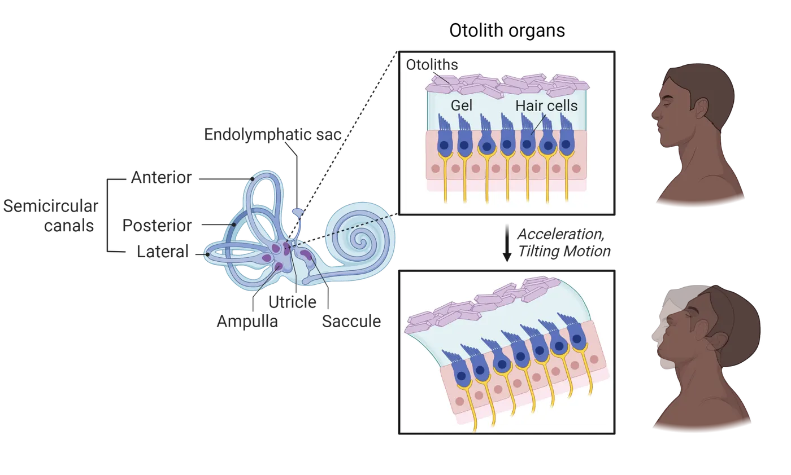
The otolith organs are responsible for sensing linear movements and the direction of gravity. They consist of swellings similar to the ampullae. The floor of each swelling, called the macula, contains hair cells covered in a gelatinous mass. Unlike the cupula, this mass is embedded with crystals of calcium carbonate called otoconia (“ear dust”). The utricular macula is parallel to the horizontal plane of the head. When the head is tilted or linearly accelerated along the horizontal plane, a force is exerted on the otoliths, which in turn causes the hair cells to bend (Otolith organs). The saccular macula is oriented along the vertical plane of the head and senses linear movement up and down or to the left and right. Whereas the stereocilia in the ampullae are all aligned in the same direction, the macular hair cells have stereocilia that point in all directions. Tilting or linear movement of the head therefore depolarizes some hair cells while hyperpolarizing others.
Vestibular hair cells are innervated by afferent nerve fibers from bipolar neurons with their cell bodies in the vestibular ganglion. As in the cochlea, they also receive efferent connections from neurons in the brainstem, but the function of this system remains poorly understood. The ascending axons from vestibular ganglion neurons course through cranial nerve VIII and synapse in the vestibular nuclear complex, a group of nuclei located in the medulla and the pons. The main outputs of the vestibular nuclei are to the cerebellum, the spinal cord, and the reticular formation, involved in postural control, and to the abducens nucleus and the oculomotor nucleus, which are responsible for maintaining gaze direction while the head is rotated (Vestibuloocular reflex). The vestibular nuclei also project to the cortex via the thalamus, and this pathway is responsible for the conscious perception of tilt and acceleration. The cerebellum contributes a major descending connection to the vestibular nuclei that is responsible for modulating the gain of postural and gaze reflexes.
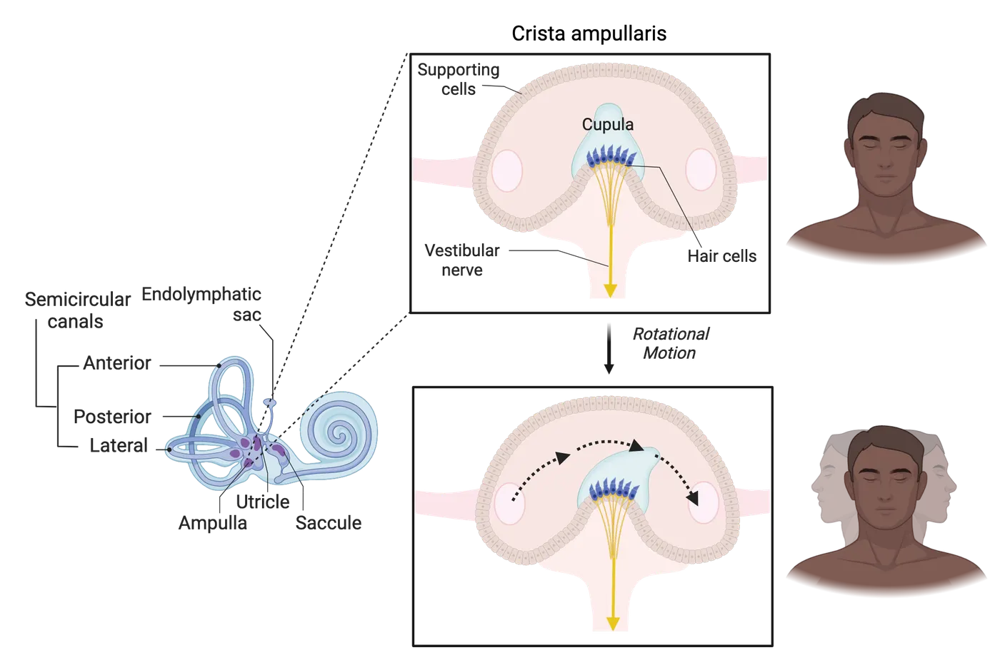
Vestibular control of gaze and balance
Maintaining balance, especially in bipedal species like humans, requires rapid, reflexive muscular movements to keep the body’s center of mass in alignment with gravity. Furthermore, locomotory activities like running, walking, and flying cause displacements of the head, and animals need to correct for these movements to maintain a clear visual image. The vestibular system plays a critical role in both of these processes.
The central concept in understanding how gaze and balance are maintained is feedback: movements that displace the body or the eyes from the desired position produce signals in the vestibular system that output to the specific muscles that generate a corrective or compensatory movement. The vestibular reflexes are some of the fastest in the body, and to achieve that speed, the underlying circuitry is relatively simple.
The vestibulo-ocular reflex (VOR) is the simplest and most easily demonstrated vestibular reflex. Hold a finger up at arm’s length directly in front of your eyes, and then rotate your head from side to side while maintaining your gaze on the finger. Notice how the image of the finger remains sharp and stable. Now try moving your finger back and forth while holding your head still and notice how the image starts to blur. The blurring occurs because the brain is not fast enough to adjust the position of the eyes in response to a rapidly changing visual stimulus: there are many synapses between the retina and the muscles of the eyes, and computing the position of a moving object from a visual image is not trivial.
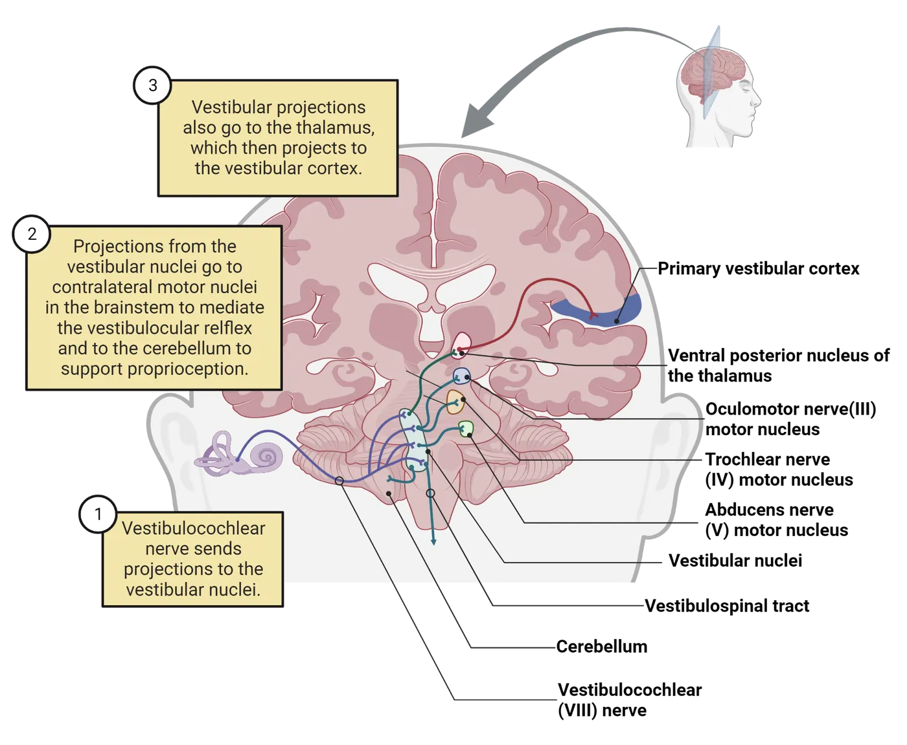
The VOR is fast because the hair cells in the semicircular canals provide direct information about the movement of the head, and they are connected to the ocular muscles by only 2–3 synapses. Vestibuloocular reflex illustrates how the VOR works for rotations along the horizontal plane (yaw). As the head moves counterclockwise, the fluid in the lateral semicircular canals remains stationary due to inertia. This deflects the hair cells in the lateral ampullae, producing excitation on the left side and inhibition on the right. Excitation of neurons in the left vestibular ganglion in turn excites neurons in the left vestibular nucleus and then the left abducens nucleus. The abducens excites the contralateral rectus via cranial nerve VI, which adducts the right eye, pulling it away from the midline. The abducens also excites the contralateral oculomotor nucleus, which activates the medial rectus muscle of the left eye, abducting it towards the midline. The output from the left lateral ampulla is inhibited, which in turn causes the opposing muscles (the left lateral rectus and the right medial rectus) to relax. The net effect is for the eyes to move in the opposite direction from the head, directly compensating for its motion without the need for any visual processing. There are similar circuits that mediate ocular reflexes in response to angular and linear movements along the other directions, thereby allowing animals to maintain steady gaze during all kinds of tasks.
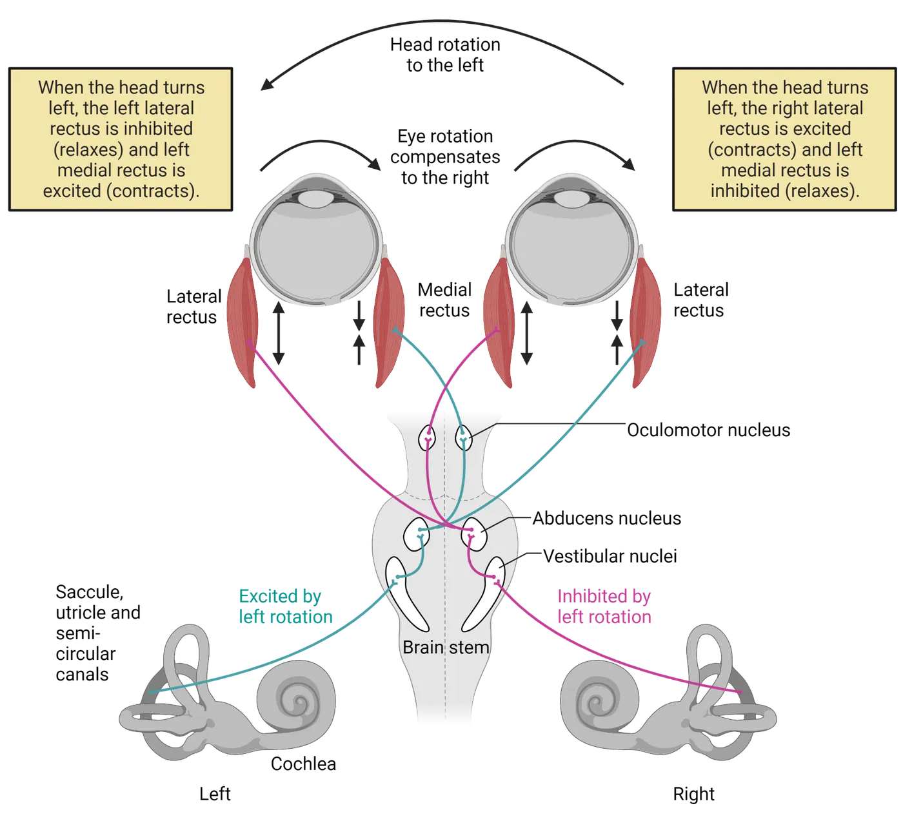
For the VOR to maintain gaze, the angular distance of the eye movement needs to be matched to the angular displacement of the head. The scaling between the sensory input (head movement) and the motor output (eye movement) is called the gain of the reflex, and it depends on the distance of the object from the eyes. To illustrate, repeat the experiment in the previous paragraph, holding your finger still while rotating your head from side to side. Keep your focus on your finger, but notice how objects in the background do not remain steady. Now focus on the background, and notice how your finger now appears to move. This modulation in gain depends on descending input from the cerebellum to the vestibular nucleus. Purkinje neurons in the flocculus of the cerebellum integrate information from many sources, including optic flow from the superior colliculus, neck movements from proprioceptors, and motor commands from the cortex to predict how eye movements will affect the visual image. The output of these neurons can increase or decrease the gain of the vestibular nucleus neurons to appropriately scale eye movements. The cerebellum can learn to adjust its predictions when visual or vestibular inputs are perturbed, for example if the vestibular hair cells on one side of the head are damaged or if glasses are worn with prisms that distort or reverse the visual image (Blazquez et al., 2004; Day and Fitzpatrick 2005).
The other two major vestibular reflexes are the vestibulocollic reflex and the vestibulospinal reflex. The vestibulocollic reflex generates neck muscle contractions to stabilize the head’s position relative to the body, whereas the vestibulospinal reflex generates limb and core muscle movements to maintain balance. When the head and trunk tilt to one side, signals from the vestibular nucleus to motor neurons in the spinal cord cause the ipsilateral limbs to extend while the contralateral limbs contract, which has the net effect of pushing the body back towards the vertical. As with the VOR, the cerebellum is responsible for modulating the gain of the vestibulocollic and vestibulospinal reflexes during volitional movements.
Summary
The vestibular system senses linear and angular movements of the head and its tilt relative to gravity. These forces are transduced to neural signals by hair cells within the semicircular canals and the otolith organs of the vestibular labyrinth. The vestibular nuclei are responsible for generating reflexes in the eye muscles that maintain gaze and for reflexes in the neck and body muscles that maintain head position and balance.
Key terms
abduct, acceleration, adduct, ampulla, ampullary crest, cupula, dynamic force, endolymph, feedback, gain, macula, otoconia, otolith organs, saccule, semicircular canals, static force, vestibular ganglion, vestibular nuclear complex, vestibulo-ocular reflex, vestibulocollic reflex, vestibulospinal reflex, utricleReferences
Blazquez, P. M., Hirata, Y., & Highstein, S. M. (2004). The vestibulo-ocular reflex as a model system for motor learning: What is the role of the cerebellum? The Cerebellum, 3, 188–192.
Cohen, B., & Raphan, T. (2004). The physiology of the vestibuloocular reflex (VOR). In S. M. Highstein, R. R. Fay, & A. N. Popper (Eds.), The vestibular system (pp. 235–285). New York, NY: Springer New York.
Day, B. L., & Fitzpatrick, R. C. (2005). The vestibular system. Current Biology, 15, R583–R586.
Ito, M. (1998). Cerebellar learning in the vestibuloocular reflex. Trends in Cognitive Sciences, 2, 313–321.
Rabbitt, R. D., Damiano, E. R., & Grant, J. W. (2004). Biomechanics of the semicircular canals and otolith organs. In S. M. Highstein, R. R. Fay, & A. N. Popper (Eds.), The vestibular system (pp. 153–201). New York, NY: Springer New York.
Practice The multiple-choice and fill-in-the-blank questions for this section are interactive and live on OpenStax, so they are not carried here: open the book on openstax.org.
Adapted from Introduction to Behavioral Neuroscience by OpenStax, licensed under CC BY-NC-SA 4.0. Access for free at openstax.org. Changes: set in this site’s own pages and type, the images recompressed, the interactive exercises and videos linked rather than carried. This adaptation is offered under the same licence.